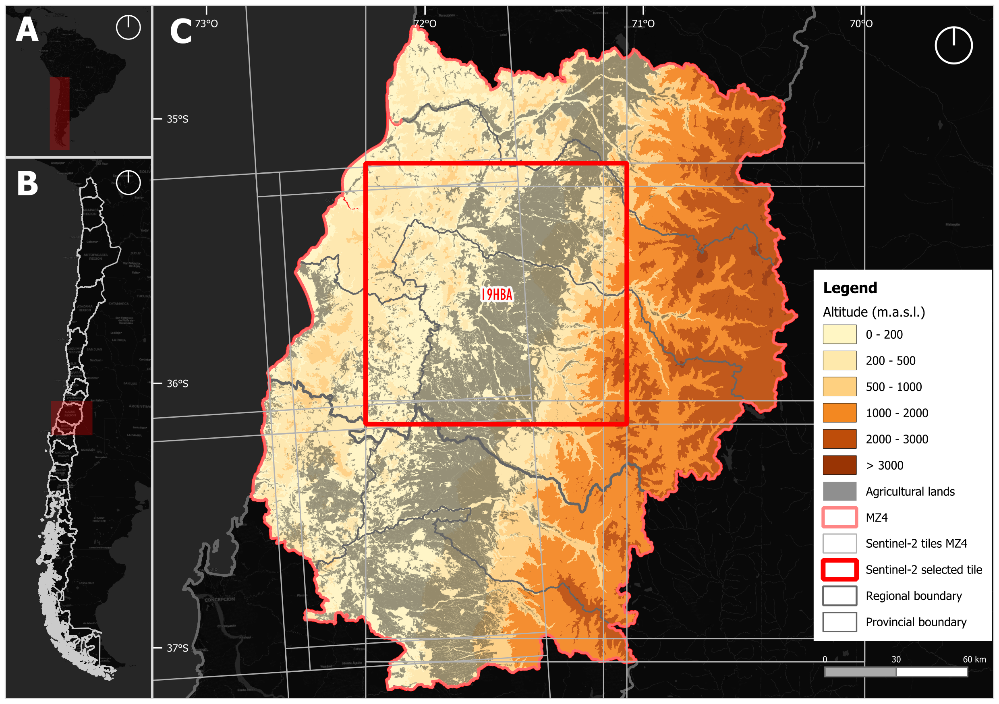
18 Crop classification and land use mapping in Chile
18.1 Introduction
The National Institute of Statistics (INE) of Chile is the technical agency responsible for producing, collecting, processing, and disseminating official statistics. Its primary mission is to provide timely, objective, and high-quality statistical information to support public and private decision-making, public policy design, territorial planning, and socioeconomic analysis. In fulfilling this mission, the INE adheres to principles of transparency, impartiality, methodological rigor, and confidentiality, aligned with international standards set by the United Nations and other specialized organizations. It also continuously improves its processes through technological modernization, methodology validation, and ongoing staff training initiatives (INE).
Despite these ongoing efforts, a significant gap remains: the absence of a standardized Land Use and Land Cover (LULC) map specifically designed to support the production of official agricultural statistics. In Chile, various LULC maps have been developed; however, none have been explicitly tailored for this purpose [1]. This situation presents multiple challenges, including the lack of standardized information, limited data availability, and difficulties integrating existing data into official statistical production. To overcome these limitations, the INE has initiated the development of a national LULC map, aiming to optimize the primary database used for the construction and updating of the sampling frame for intercensal agricultural surveys. This initiative aims to significantly enhance the precision, relevance, and timeliness of agricultural statistics, enabling better informed decision and more efficient planning.
The benefits of developing a LULC map are diverse. In terms of the Agricultural Master Sampling Frame, it will ensure the timely availability of updated inputs, promote the construction and maintenance of the sampling frame under standardized criteria, support the updating of stratification processes, and guarantee exhaustive coverage to minimize and properly correct sampling biases [2]. From the perspective of agricultural statistics production, the LULC map will serve as a complementary source of information essential for estimating areas of productive land cover, monitoring temporal changes in land use, providing key indicators for remote or inaccessible areas, and improving the efficiency of resource use by reducing the costs associated with traditional data collection methods [3]. The relevance of this effort becomes even greater when considering the inherent challenges of agricultural statistics. The production landscape is highly dynamic, influenced by local management decisions, meteorological variability, and natural disasters, which generate short- and medium-term changes [4]. Maintaining continuous and reliable information on a national scale under these conditions entails high economic costs. Thus, advancing the adoption of remote sensing technologies, such as satellite imagery or drone-based surveys, is essential to optimize and reinforce field data collection efforts for agricultural statistics.
LULC maps generated with Earth Observation (EO) data can play a key role in supporting sample design through improved stratification. For instance, crop intensity maps can significantly reduce sampling variances or lower field data collection efforts and associated costs [5]. Moreover, identifying non-agricultural strata that should not be sampled, or that require differentiated treatment, can enhance the efficiency of statistical surveys. However, the efficiency of stratification depends critically on the relevance and quality of the employed land cover map.
Recent advancements in EO technology have markedly improved the spatiotemporal monitoring of agricultural surfaces. These technological advances enable more timely and continuous assessments of changes in agricultural land use, including the expansion of cropland into natural vegetation and the reduction of agricultural areas due to droughts, floods, or wildfires [4]. Given these advancements, the use of EO-derived LULC maps emerges as a fundamental tool for modernizing and enhancing the production of official agricultural statistics in Chile. It offers a standardized, timely, and efficient approach to understanding agricultural dynamics, improving statistical accuracy, and supporting evidence-based policy and planning.
This study applies and builds upon the methodological improvements and lessons learned from the pilot project carried out in the Maule Region in 2024 by INE Chile. This project established the groundwork for using land use and land cover classification processes based on satellite and auxiliary data as an input to produce agricultural statistics [1].
18.2 Methods
18.2.1 Study area
One of the main challenges of this work is the territorial extent of Chile, the longest country in the world, spanning more than 4,200 kilometers from north to south and located approximately between latitudes 18° and 56° South. This geographic configuration results in high climatic variability [6] and a wide diversity of landscapes and land-forms, which in turn condition the presence of various land cover types and land use practices
In our case, we developed a proposal for subdividing continental Chile into macrozones, defined as groupings of provinces (political-administrative units within regions) with similar geographical characteristics (understood as those climatic, vegetational, and agricultural variables that determine the landscape of a given territory). To support this, three sources of geographical characteristics for Chile were considered: (1) the Chilean Agroclimatic Atlas [7], (2) the Bioclimatic and Vegetational Synopsis of Chile [8], and (3) the Rural Atlas of Chile [9].
These three sources were analyzed spatially by identifying the territorial distribution of each classification, and then grouping, from north to south, those provinces with similar characteristics. Thus, we arrived at a proposal of nine macrozones that group the country’s 56 provinces based on similar geographical characteristics. In this case, we focused on Macrozone 4 (MZ4), which includes the provinces of the Maule and Biobío regions.
MZ4 is located between latitudes 34°41’ and 37°18’ south (Figure 18.1) and covers an area of 43,394 km2 (approximately 5.7% of Chile’s surface area), it is characterized by a temperate Mediterranean climate with marked seasonality in precipitation. According to the updated Köppen-Geiger classification [10], the predominant climate in this area is Csb, corresponding to a dry-summer, temperate Mediterranean climate, with precipitation concentrated in the winter months (June to August) and a water deficit in the summer (December to February). In the highest areas of the foothills and the Andes Mountain Range, the climate changes to a cool-summer oceanic regime (Cfb), characterized by higher annual precipitation and lower temperature amplitudes. Its topography includes the country’s main land-forms (Andes Mountain Range, intermediate depression, coastal mountain range, coastal plains, and river basins), which gives it great geomorphological, climatic, and ecological diversity. Its topography includes mountains reaching near 4.000 m.a.s.l. in the Andes.
According to the 2021 Census of Agriculture (INE), the MZ4 plays a significant role in Chile´s agricultural and forestry production. Based on the censuses of land categories, the primary uses of land in the zone are croplands and forest plantations (50.5%), forest (19.4%), and grassland-shrubland (18.9%). Additionally, this zone represents 27.8% of the national area of croplands and forest plantations (considering the census land area). In this context, land use in the zone is primarily focused on forest plantations (60.9%), cereals (14.5%), fruit orchards (11.4%), and vineyards (4.4%), totaling 91.2% of the area’s zone. This figures underscores the importance of the MZ4 in Chile’s agricultural and forestry production.
18.2.2 Classification scheme
During the development of the pilot mapping of LULC in the Maule region, a classification scheme built on predominantly agronomic criteria was used. It grouped the coverages according to their predominant use (temporary crops, permanent crops, pastures, etc.), without incorporating explicit temporal or phenological attributes [1].
However, this methodological approach presented limitations when applying algorithms to time series of satellite images. Despite being defined as separate classes in the classification scheme, the spectral and phenological similarity, such as in the case of improved pastures and forage crops, often led to confusion during the classification process. These limitations were considered in a new proposal.
A new classification scheme was created maintaining a hierarchical structure despite technical limitations and institutional requirements [11] but incorporating with greater emphasis the phenological dimension. This new multi-level structure allowed a more precise thematic breakdown (for example, winter crops, successive crops, fallow land), and integrated observable variables in vegetation curves such as the NDVI. The new scheme recognizes the dynamic nature of certain classes, replacing the fixed coverage approach with a temporarily explicit one.
A key challenge in producing annual land cover maps is to properly represent classes that experience seasonal changes within the year. The hierarchical-phenological schemes address this problem by including explicit temporal or seasonal classes, which allow them to represent dynamic coverages without forcing them into static categories [12], [13].
In our case, new seasonal classes were added to some categories. For example, in native forests they explicitly differentiate between deciduous and perennial trees, integrating phenology as a classification criterion. This differentiation makes it possible, for example, to prevent deciduous forests in winter images from being misclassified as bare soil or disturbed areas. This logic has been formally incorporated into systems such as the FAO’s Land Cover Classification System (LCCS), which explicitly distinguishes between deciduous and perennial forests.
The use of time classes in agricultural areas can be particularly advantageous for representing different crop cycles observed in a single agricultural year. A phenological approach distinguishes between winter, summer, succession, or double harvest crops, unlike traditional schemes that classify crops in aggregate form. It is possible to identify double crop fields by analyzing the number of phenological peaks in the NDVI time series, as demonstrated by [14]. The capture of land use intensity by these time classes is essential for agricultural planning, production estimation, and water management.
The integration of multi-time data is essential to represent the dynamics of land cover and use. Several studies have shown that the use of satellite images from multiple dates significantly increases the accuracy in the classification of dynamic coverage [15], [16]. In agricultural landscapes, the combination of summer and winter images allows to separate crops that could be spectrally indistinguishable at single dates. In deciduous forests, the contrast between full-leaf and no-foliage images is crucial to correctly identify their type [15].
Additionally, the utilization of phenological data enhances the detection of changes or disturbances. Time series allows for the identification of breaks in expected vegetation behavior, while static approaches tend to omit short-term events such as fires or crops. These ruptures, visible as phenological anomalies, are key to detecting real changes in soil cover. Thus, the hierarchical-phenological scheme not only allows to classify coverage but also acts as a tool for territorial monitoring [17].
In this context, a hierarchical-phenological classification approach is proposed, whose structure incorporates the seasonal dynamism of those cover and land use classes that present phenological variations during the year, such as agricultural lands, forest plantations, grassland, and snow-covered areas. Figure 18.2 shows the complete structure of the scheme at three levels.
In the case of agricultural land category, four major classes are distinguished at the second level: temporary crops, permanent crops, pastures, and fallow land. In turn, temporary crops are subdivided into winter, spring/summer, and successive crops. Permanent crops include deciduous and persistent fruit. Annual and perennial pastures are also differentiated, and fallow land is incorporated as a specific category. This hierarchical phenological structure allows a progressive classification based on the phenological dynamics observed in agricultural systems [18].
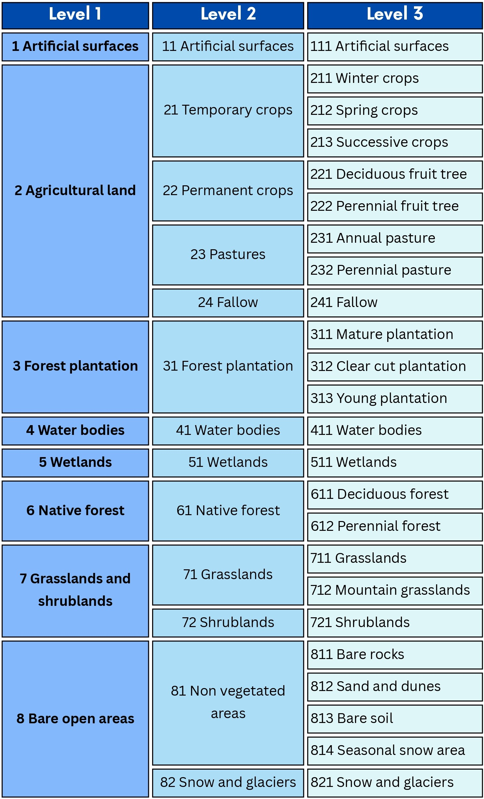
18.2.3 Training data
Field surveys have a limited number of samples, and obtaining many necessitates a significant investment in manpower, financial resources, and time. Therefore, a sampling of points generated from polygons was chosen to increase the number of samples, with the aim of improving the stability and generalization capability of the classifier [19]. The polygons were constructed as training sites for each of the 24 classes of level three defined in the classification scheme.
As a result, numerous point-level samples were obtained (near 62,000 labeled points), unlike the polygon samples (4,140 labeled polygons), each with its corresponding time curve and coverage class, derived from the crossover between these points and the satellite data cube. Sampling was designed according to the area distribution of all polygons, assigning each one a minimum and maximum number of points, determined in proportion to their relative size versus the rest.
According to Figure 18.3, the process begins with the establishment of a hierarchical classification based on the phenology of the different categories of land cover and use. Data from agricultural censuses and cadastres are used to define the classes. Subsequently, each class is validated by temporal analysis of NDVI indices and seasonal RGB compositions, complemented with expert interpretation of very high resolution (VHR) images [1]. Finally, sample polygons labeled with their respective classes are digitized, within which random points are generated in quantity proportional to their surface area. These points inherit the label of the corresponding polygon, making them suitable for use as training data in classification models.
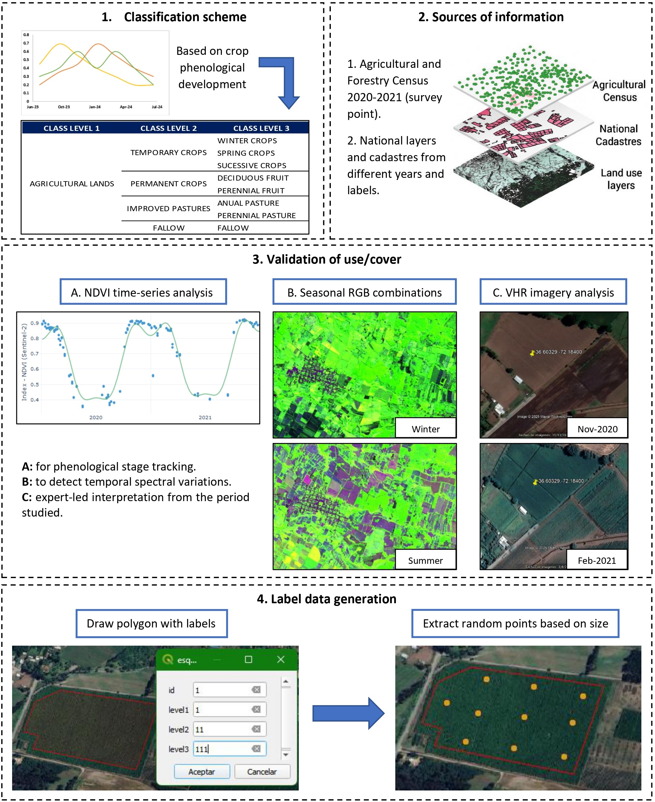
The following steps summarize the applied process:
Definition of classification scheme: A hierarchical-phenological scheme composed of 24 classes at level 3 was established, defined from the analysis of the different land cover and uses. This analysis considered especially the dynamic and seasonal behavior of many of these classes, allowing a more precise differentiation based on their phenology.
-
Construction of coverage and land use polygons using census and cadastral data
- Agricultural census data: Agricultural and forestry census records are incorporated as a source of reference information. These data include GPS coordinates of the management point performed and not the explicit location of the crop or forest species, so certain filters and assumptions must be applied to make use of the information [1].
- Official cadastral data: Cadastral layers are used as an auxiliary source for delineating land cover. These layers are stable elements and widely available in geographic information systems. Thus, official land boundary information is leveraged to define potential areas of agricultural use, forest zones, natural vegetation, urban settlements, among others, and to assign initial land cover classes [1]
-
Validation of land cover and land use polygons through remote sensing analysis
- NDVI time series: The use of NDVI time series enables the characterization of the phenological phases of crops and land covers through phenograms that reflect their seasonal dynamics. This information supports a hierarchical classification, first distinguishing between cultivated and non-cultivated areas, and subsequently among specific crop types, by validating the assigned labels based on the observed temporal consistency [20].
- Multitemporal RGB composites: Multitemporal RGB composites, based on optical imagery from different seasons of the year, highlight seasonal variations in reflectance, facilitating the identification of crops through changes in color and texture. The combination of winter and summer images has proven effective in improving class discrimination by capturing complementary structural and phenological features [21].
- VHR image interpretation: Validation using very high-resolution (VHR) satellite imagery allows for the confirmation or correction of land cover labels through expert visual interpretation. This technique considered a standard in remote sensing studies, facilitates the verification of reference data based on visual elements such as crop patterns or spatial vegetation structures [22].
-
Labeled data generation
- Digitization of representative polygons: Training data generation is carried out through the manual digitization of polygons over high-resolution imagery, assigning labels corresponding to the Level 3 hierarchical classes defined in the classification scheme. This practice, widely used in remote sensing, enables adequate representation of spatial variability and helps reduce noise associated with individual pixels [23].
-
Consolidation of representative polygons: The generated polygons are consolidated into a single spatial layer, applying the necessary geometric corrections and eliminating any potential overlaps among them. As we mentioned previously, we obtained 4,140 labeled polygons.
-
Random sampling of points proportional to polygon area: Finally, based on the labeled polygons, random sampling points are generated in quantities proportional to the area of each polygon. These points inherit the hierarchical classification of the area in which they are located, enabling the construction of a statistically representative training dataset for each class with low spatial autocorrelation among samples. This dataset is then used by machine learning models, such as Random Forest or neural networks, to classify larger areas of the territory.
Point sampling generation is a process designed to obtain the most representative coverage of the built polygons for each class, considering as the main criterion the area of each of them. To do this, a procedure was implemented that allows you to control different parameters associated with the generation of points from polygons, such as the minimum and maximum number of points per unit, and the minimum distance between points, among others. In the first stage, a frequency analysis of the surfaces of the polygons was carried out, which showed a high variability, with values ranging from 150 to 3,800,000 m². This finding reinforced the methodological decision to establish a proportional allocation of points according to the size of each polygon. After preliminary testing, minimum and maximum ranges of 5 to 25 points per polygon were established. In addition, polygons with surface areas greater than 250,000 m² were excluded from the sampling process due to their disproportionate influence on the overall sample distribution (once the filter is applied, we work with 3,924 labeled polygons). Finally, to control the total number of points generated, a maximum of 5,000 points per class was set, applying a stratified random sampling approach to ensure both representativeness and class balance.
Finally, random sampling of points proportional to the area of the polygons resulted in a total of 62,920 points in the training set. The distribution of samples is presented in Figure 18.4 .
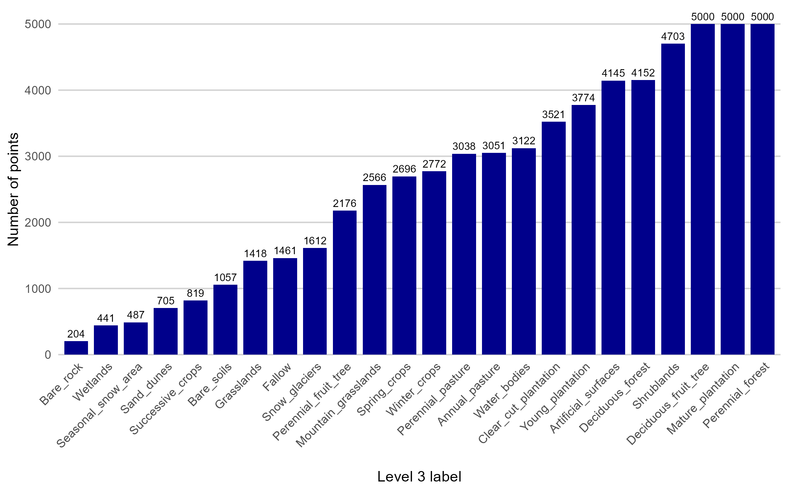
18.2.4 Generation of land use and land cover maps using time series of satellite images
[24] developed an open-source R package called sits, which enables the analysis of time series of satellite images for land use and land cover classification. This analysis is performed through machine learning and follows an approach they have termed “time first–space later.” The main contribution of this package is that it provides a complete workflow for soil classification using large Earth Observation datasets. Users can create data cubes from cloud-based image providers, retrieve time series from these cubes, and improve the quality of training data. Moreover, various machine learning and deep learning methods are supported. Additionally, spatial smoothing methods remove outliers from classifications [25], and best-practice accuracy techniques ensure realistic assessments [26], [27].
The sits package introduces innovations in image catalog access for cloud computing services and deep learning algorithms for time series analysis, which have been recently published and are unavailable in other R packages. It also includes new methods for quality control of training data [28]. Parallel processing methods specifically designed for data cubes ensure efficient performance. Sits provides tools for analysis, visualization, and classification of time series of satellite images (supporting the full classification cycle), offering features that surpass those of existing R packages. It proposes a standardized workflow for users to perform pixel-based classification.
The package provides key tools for generating maps with potential applications in official statistics, aligning with FAO recommendations for accuracy assessment and area estimation in land use and land cover maps [29]. It allows accuracy to be measured through confusion matrices, area estimates, and confidence intervals that reflect the precision of these estimates.
The sits workflow
The package provides a comprehensive set of tools for the analysis, visualization, and classification of satellite image time series. It supports a standardized workflow for pixel-based classification, in which each step corresponds to a dedicated function in the sits API, with well-defined inputs and outputs, as illustrated in Figure 18.5. The API is designed to be intuitive and easy to use, with sensible default parameters and user-friendly behavior. As a result, users can achieve reliable results without requiring deep expertise in machine learning or parallel processing (All the steps and example scripts could be found in sitsbook).
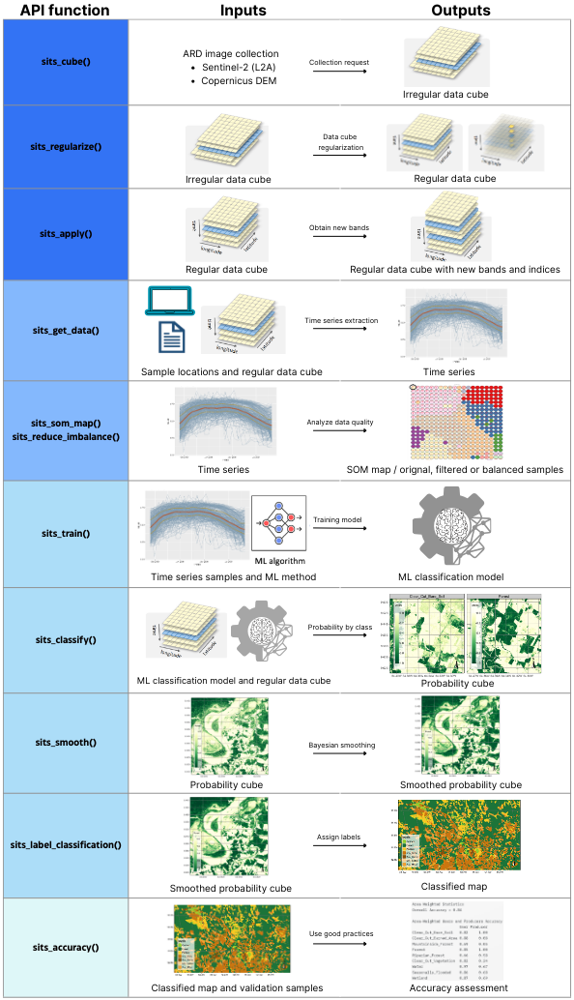
Configuration to run the example in this chapter
# load packages "tibble", "sf" and "sits"
library(tibble)
library(sits)
library(sf)
library(terra)
# set dir if it does not exist
dir_19HBA <- "data/ct_chile"
dir.create(dir_19HBA, recursive = TRUE)
# set dir for results
dir_19HBA_out <- paste0(dir_19HBA, "/Out")
dir_19HBA_cube <- paste0(dir_19HBA, "/Cube")
dir_19HBA_cubeS2 <- paste0(dir_19HBA_cube, "/S2_Cube")
dir_19HBA_cubeS2reg <- paste0(dir_19HBA_cube, "/S2_Cube/reg")
dir_19HBA_cubeDEM <- paste0(dir_19HBA_cube, "/DEM_Cube")
dir.create(dir_19HBA_out, recursive = TRUE)
dir.create(dir_19HBA_cube, recursive = TRUE)
dir.create(dir_19HBA_cubeS2, recursive = TRUE)
dir.create(dir_19HBA_cubeS2reg, recursive = TRUE)
dir.create(dir_19HBA_cubeDEM, recursive = TRUE)
# Set the color palette
cl_tbl_eng <- tibble::tibble(name = character(), color = character())
cl_tbl_eng <- cl_tbl_eng |>
add_row(name = "Sand_dunes", color = "#bababa") |>
add_row(name = "Fallow", color = "#7D4A0C") |>
add_row(name = "Deciduous_forest", color = "#228710") |>
add_row(name = "Perennial_forest", color = "#004529") |>
add_row(name = "Winter_crops", color = "#ffff99") |>
add_row(name = "Spring_crops", color = "#ffd92f") |>
add_row(name = "Successive_crops", color = "#FFA500") |>
add_row(name = "Deciduous_fruit_tree",color = "#df65b0") |>
add_row(name = "Perennial_fruit_tree",color = "#ce1256") |>
add_row(name = "Wetlands", color = "#93dfe6") |>
add_row(name = "Shrublands", color = "#8B864E") |>
add_row(name = "Snow_glaciers", color = "#00BFFF") |>
add_row(name = "Annual_pasture", color = "#6959CD") |>
add_row(name = "Perennial_pasture", color = "#B452CD") |>
add_row(name = "Mature_plantation", color = "#7CFC00") |>
add_row(name = "Clear_cut_plantation",color = "#bf812d") |>
add_row(name = "Young_plantation", color = "#0ecf65") |>
add_row(name = "Mountain_grasslands", color = "#35978f")|>
add_row(name = "Grasslands", color = "#01665e")|>
add_row(name = "Bare_soils", color = "#e0e0e0")|>
add_row(name = "Water_bodies", color = "#0C3BD4")|>
add_row(name = "Artificial_surfaces", color = "#fa0000")|>
add_row(name = "No_Class", color = "white") |>
add_row(name = "No_Data", color = "white") |>
add_row(name = "No_Samples", color = "white")
# Load the color table into `sits`
sits_colors_set(cl_tbl_eng)In this example, we replicated the land use and land cover classification results developed for the entire study area but focused on a specific region to ensure the reproducibility of the process. To illustrate the workflow, we selected a small region covering tile 19HBA, which contains a high concentration of agricultural land (Figure 18.1). The classification covers the period from May 2020 to May 2021, aligned with the agricultural calendar, and uses a temporal resolution of 16 days throughout the analysis. It is important to note that the workflow includes stochastic processes, such as model training or sampling steps, which may lead to slight variations in results across different runs, even when using the same input data and parameters.
18.3 Study area data
We begin by loading the spatial datasets for this study. The first file contains the ground-sampled points used as reference data, and the second defines the ROI that frames our analysis. Both are read with sf to retain their geometry and attributes for later spatial operations.
18.4 Earth observation data cubes
Accessing SENTINEL-2/2A images
For the case of MZ4 we build an irregular data cube with 14 tiles that cover the entire area (18HXF, 18HYG, 18HXE, 18HYF, 18HYE, 18HYD, 19HBB, 19HBA, 19HBV, 19HBU, 19HCB, 19HCA, 19HCV, 19HCU) and request 11 bands (B02, B03, B04, B05, B06, B07, B08, B8A, B11, B12, CLOUD). For this example we only request 3 bands plus the Cloud band.
The generated data cube is irregular, so it must be regularized before proceeding with the analysis. As recommended in the sitsbook documentation, we first download the images locally prior to applying the regularization step. While this is not strictly required, it is considered a best practice. However, if local storage is limited, regularization can be performed directly on the remote data source.
# Copy images locally
sent_19HBA <- sits_cube_copy(
cube = sent_19HBA,
multicores = 5,
output_dir = dir_19HBA_cubeS2)The sits package supports access to both local and remote image collections. Next step demonstrate how to read locally stored images after copying them from the remote source. The only distinction between accessing local versus remote data lies in the data_dir parameter, which indicates the directory path where the images are stored locally.
# Access local data cube
sent_19HBA <- sits_cube(
source = "MPC",
collection = "SENTINEL-2-L2A",
data_dir = dir_19HBA_cubeS2)After creating the local data cube, we proceed with the regularization step using the sits_regularize() function. In this case, the entire timeline of the irregular data cube is regularized, assuming it shares the same timeline as the ground truth data. A temporal resolution of 16 days was defined for the regularization process.
# Regularize the cube to 16 day intervals
sent_19HBA_reg <- sits_regularize(
cube = sent_19HBA,
period = "P16D",
output_dir = dir_19HBA_cubeS2reg,
res = 10,
multicores = 8)
# Plot
sent_19HBA_reg |>
plot(red = "B08", blue = "B04", green = "B11",
dates = "2020-12-13")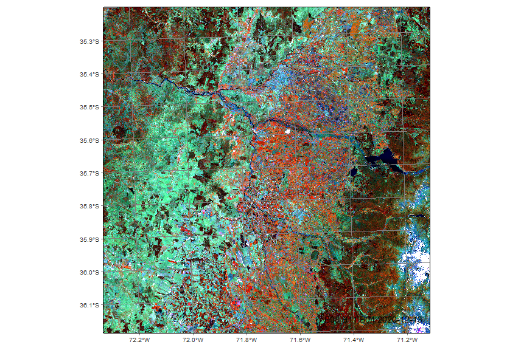
Copernicus DEM 30 meter images
In regions with significant topographic, soil, or climatic variability, integrating multitemporal satellite data with elevation information, such as Digital Elevation Models (DEM), can improve land use and land cover classification. Elevation adds a third dimension that helps differentiate classes influenced by altitude, such as lowland vs. highland forests.
Given that both MZ4 and the region of interest (ROI) exhibit considerable topographic variability, with a steep altitudinal gradient (Figure 18.1), it becomes relevant to integrate elevation data into the analysis. In mountainous countries like Chile, where elevation strongly influences climatic and soil conditions, this altitudinal variability plays a key role in shaping the spatial distribution of land use and vegetation cover. In our example, we integrate a DEM into a data cube (this agricultural region in Chile covers the Andes, where steep elevation gradients justify its inclusion). We use the Copernicus Global DEM-30, selecting the area covered by the 19HBA tile. For MZ4, we selected the entire ROI within the study area.
# DEM irregular cube
dem_19HBA <- sits_cube(
source = "MPC",
collection = "COP-DEM-GLO-30",
tiles = "19HBA",
bands = "ELEVATION")After obtaining the data cube for the selected tile, the next step is to regularize it using the sits_regularize() function. This function generates a regularized data cube that exactly matches the spatial and temporal extent of the selected tile.
# Regularizing DEM cube
dem_19HBA_reg <- sits_regularize(
cube = dem_19HBA,
res = 10,
bands = "ELEVATION",
tiles = "19HBA",
output_dir = dir_19HBA_cubeDEM)
# plot the DEM
plot(dem_19HBA_reg, band = "ELEVATION", palette = "RdYlBu", rev = T)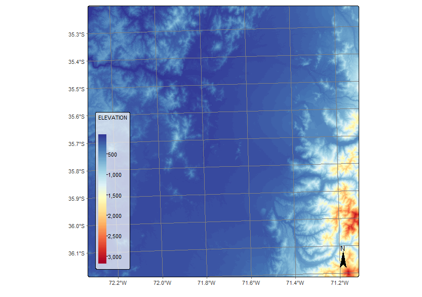
Computing vegetation indexes
The sits package provides powerful tools for performing operations directly on data cubes, enabling users to manipulate and extract information from multitemporal satellite imagery. One of these key functions is sits_apply(), which allows the computation of custom indices using R expressions. In the step below, we illustrate its use by calculating the NDVI index. For MZ4, we apply this function to compute NDVI, EVI, and NDWI indices, and we also derive the slope from the DEM using the terra package, enhancing the feature set with topographic information.
# Calculate NDVI index using bands B08 and B04
sent_19HBA_reg <- sits_apply(sent_19HBA_reg,
NDVI = ((B08 - B04) / (B08 + B04)),
memsize = 32,
multicores = 8,
output_dir = dir_19HBA_cubeS2,
progress = T)
# Visualize NDVI
plot(sent_19HBA_reg, band = "NDVI", dates = "2021-01-14",palette = "RdYlGn")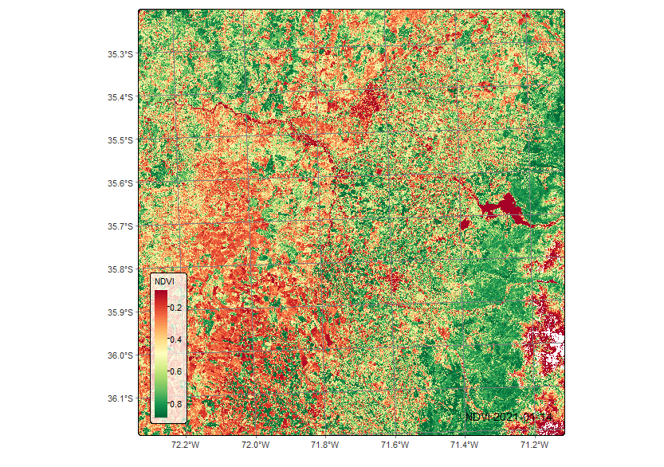
Combining multitemporal data cubes with DEMs
As stated in the sitsbook, an alternative for incorporating elevation data is to merge the image data cube with the DEM using the sits_merge() function, treating the DEM as an additional band. This replicates the DEM across all time steps, creating an artificial time series. It can be particularly beneficial in areas where elevation strongly influences land cover patterns.
# Merging multitemporal data cubes with DEM
# In the case of Chile, the DEM should be used as a time series band
cube_19HBA <- sits_merge(sent_19HBA_reg, dem_19HBA_reg)18.5 Satellite image time series
Getting time series data from data cubes
After creating the data cube, the next step is to extract the time series for the ground truth data. In this case we use an sf object with POINT geometry as samples parameter (See Section 18.2.3). In this case, all samples share the same dates and correspond to those of the data cube.
# Read the points from the cube and produce a tibble with time series
samples_19HBA <- sits_get_data(
cube = cube_19HBA,
samples = points_roi,
labet_attr = "label",
pol_id = "id",
progress = T,
multicores = 8)
# Show summary of samples
summary(samples_19HBA)# A tibble: 22 × 3
label count prop
<chr> <int> <dbl>
1 Annual_pasture 699 0.0328
2 Artificial_surfaces 1622 0.0761
3 Bare_soils 312 0.0146
4 Clear_cut_plantation 1095 0.0514
5 Deciduous_forest 1312 0.0616
6 Deciduous_fruit_tree 2653 0.124
7 Fallow 1097 0.0515
8 Grasslands 372 0.0175
9 Mature_plantation 2099 0.0985
10 Mountain_grasslands 92 0.00432
11 Perennial_forest 169 0.00793
12 Perennial_fruit_tree 1203 0.0565
13 Perennial_pasture 1423 0.0668
14 Sand_dunes 145 0.00680
15 Shrublands 1021 0.0479
16 Snow_glaciers 123 0.00577
17 Spring_crops 1416 0.0664
18 Successive_crops 226 0.0106
19 Water_bodies 1114 0.0523
20 Wetlands 81 0.00380
21 Winter_crops 1458 0.0684
22 Young_plantation 1578 0.0740 For the region of interest in this example, we obtained a time series of 21,291 samples. For the entire MZ4, the number of samples is 62,823 (some points could not be retrieved).
When working with extensive time series data, it is helpful to generate a single plot that summarizes the key temporal dynamics of each class. The function sits_patterns() predict an idealized approximation of the time series associated with each class across bands. The resulting patterns can be visualized using the plot() function.
For better visualization, the 22 Level 3 classes available in this area of interest were grouped into four main categories: Agricultural Lands, which includes the eight agricultural Level 3 classes; Forest Plantation, which consists of the three forest-related Level 3 categories; Native Vegetation, comprising six Level 3 classes associated with areas covered by natural vegetation; and Non-Vegetated Areas, which includes five Level 3 categories, both natural and artificial, that lack vegetation cover.
# Estimate the patterns for each class and plot them
samples_19HBA |>
sits_select(bands = c("B04", "B08", "B11", "NDVI")) |>
sits_patterns() |>
plot()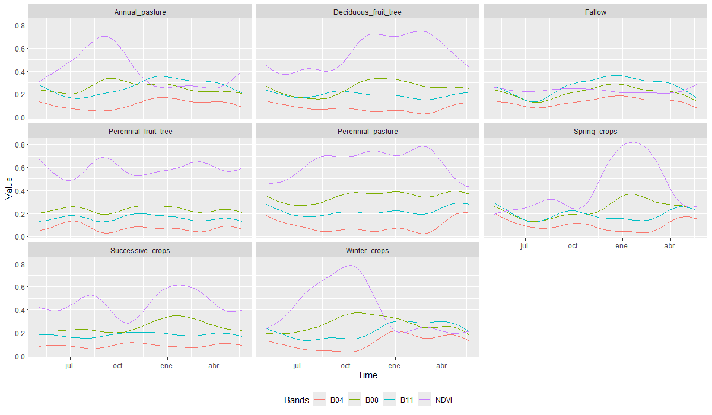
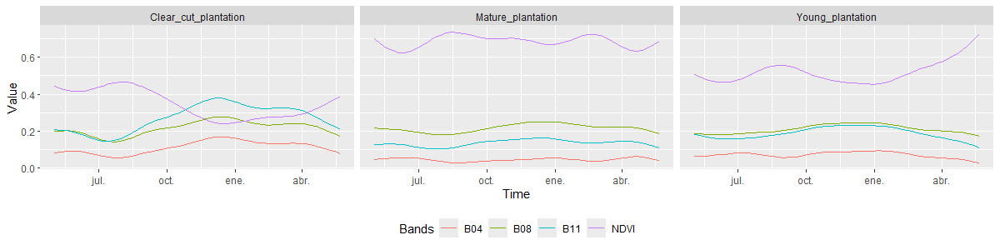
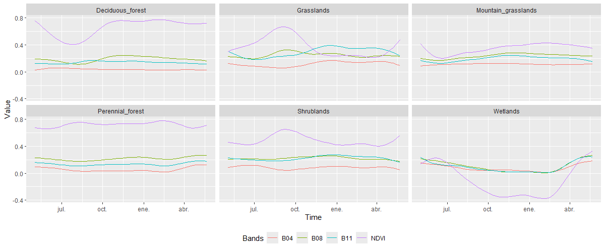
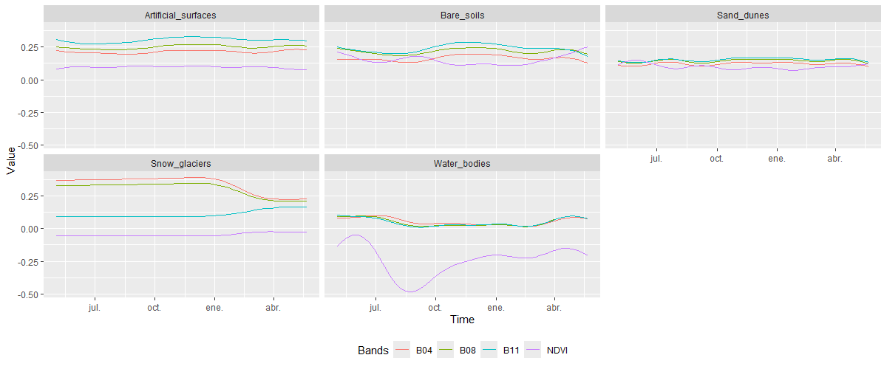
The curves reveal distinctive patterns across different land cover groups. In the case of Agricultural lands, most classes share a phenological behavior characterized by NDVI peaks and declines throughout the year, corresponding to the periods of greatest vegetative vigor for each crop type. An exception is the Fallow class, which maintains consistently low NDVI values year-round, mainly due to the absence of active cultivation. In contrast, Perennial crops (pastures and fruit trees) classes exhibit less spectral variation throughout the year, reflecting the relatively stable vegetation cover typical of these crop types.
In the case of Forest Plantation classes, the NDVI curves reflect the distinctive characteristics of each category. The Clear-Cut Plantation class shows low vegetative vigor, especially during the summer and autumn months, with a slight increase toward the end of winter. This pattern is explained by the fact that these areas were previously forest plantations that have been harvested, leaving bare soil where grasses begin to emerge after the rainy season. In contrast, the Mature Plantation and Young Plantation classes maintain more stable NDVI values throughout the year, with higher values observed in mature stands. This behavior corresponds to the nature of these plantations, which are composed of fast-growing, evergreen species that provide continuous vegetation cover.
The classes grouped under Native vegetation show vegetation vigor behavior according to the characteristics of each class. For the Deciduous_forest class, a marked decrease in NDVI values is observed in the winter season due to the natural loss of foliage. In contrast, the Perennial_forest maintains high and constant values throughout the analysis season. For Grasslands, an increase in vigor is observed in late winter and early spring, then a marked decrease during summer and autumn and early winter, when these natural grasslands have low vegetation vigor. The Shrublands class shows a slight NDVI increase in late winter and early spring, followed by a moderate decline. This pattern reflects the seasonal variation in vegetation vigor, influenced by sparse perennial shrubs and herbaceous understory responding to wet and dry periods. Finally, in the case of Wetlands, these areas exhibit a brief period of low vegetation vigor, shifting to negative NDVI values corresponding to the months in which these natural areas are covered by a body of water, as part of their annual variation in conjunction with the wet and dry months of the year.
Finally, for the classes grouped under Non-Vegetated Areas, all exhibit very low NDVI values, lower than those observed in the other plotted spectral bands, reflecting the absence of vegetation in these land cover and land use categories. The temporal variation across the four spectral bands is minimal, particularly for classes such as Artificial_surfaces, Sand_dunes, and Bare_soils, which show little seasonal change. In contrast, Snow_glaciers and Water_bodies exhibit slight variations across the four spectral bands, mainly in response to minor annual fluctuations in their natural behavior.
These temporal and spectral variations suggest that classification algorithms can effectively exploit phenological differences to distinguish between land cover classes, even when some exhibit similar spectral signatures.
Self-organized maps for sample quality control
Since the data sources used were not originally designed for Land Use and Land Cover (LULC) mapping, it is essential to ensure the quality of training samples before using them in classification models. High-quality samples are critical for achieving accurate results with remote sensing and machine learning techniques, regardless of the algorithm applied [28], [30]. Both the quantity and quality of training data significantly influence model performance. Well-labeled and representative datasets tend to yield better outcomes, while noisy or misclassified samples can degrade classification accuracy. Therefore, implementing preprocessing methods to detect and remove low-quality or mislabeled samples is a key step in improving model reliability and reducing classification errors [24], [28].
The sits package provides a clustering technique based on Self-Organizing Maps (SOM) as an alternative to hierarchical clustering methods for quality control of training samples. SOM is a dimensionality reduction technique that projects high-dimensional data onto a two-dimensional map while preserving the topological relationships between data patterns. This property facilitates the visualization and assessment of the internal consistency of the samples, helping to identify outliers, mislabeled classes, or regions with high spectral-temporal heterogeneity that could negatively impact the performance of the classification model.
For model parsimony, only a subset of bands from the time series is selected, those that best capture the relevant temporal and spectral variability. This reduced set of information is then used for quality assessment, as well as for the subsequent training and classification processes, ensuring computational efficiency without compromising model performance. For the MZ4 we selected the following bands: NDVI, EVI, NDWI, B8A, B11, B12, B07, B05, B02, ELEVATION, SLOPE. In this example we use all the presents bands, which are NDVI, B04, B08, B11, and ELEVATION.
Creating the SOM map
To perform the quality assessment based on SOM, the first step is to run sits_som_map(). The grid size is defined by the sample size, according the suggestions by [31], as implemented in [28] and [30].
For the implementation of the other parameters see the “Self-Organized maps for sample quality control” chapter in sitsbook and [28].
# Determine grid size
n_samples <- length(samples_19HBA$longitude)
min_grid <- floor(sqrt(5 * sqrt(n_samples))) - 2
# Clustering time series using SOM
som_map <- sits_som_map(data = samples_19HBA,
grid_xdim = min_grid,
grid_ydim = min_grid,
alpha = 0.05,
distance = "dtw",
rlen = 50,
mode = "pbatch")
# Plot SOM map
plot(som_map, band = "NDVI")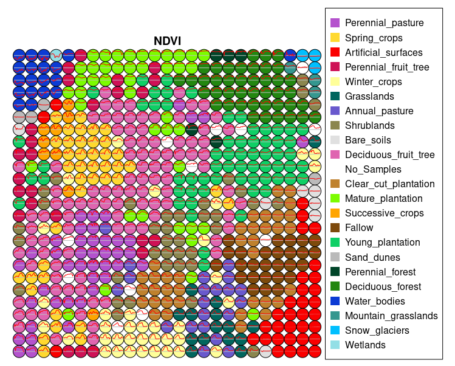
The SOM map provides a general view of the spectral similarity among different land cover and land use classes, while also highlighting the separation between them. According to the legend, when a class appears as a compact grouping of a specific color, and that color does not appear scattered in other regions of the map, it indicates that the class exhibits high internal spectral consistency. This means that the samples share similar spectral behavior and are distinguishable from other classes. A clear example of this is the Artificial_surfaces class, which appears as a well-defined cluster in the lower-right section of the SOM map, suggesting strong differentiation from other categories. Conversely, when a class does not form a distinct cluster and its color is scattered across different areas of the map, this suggests low internal spectral consistency, meaning the samples within that class display varied spectral behaviors or overlap with other classes. This is the case for the Annual_pastures class, which appears highly fragmented and mixed with different classes, such as Shrublands. This dispersion indicates potential spectral confusion or high internal variability. In such cases, it may be advisable to reassess the consistency of the training samples or consider adjustments in the thematic class definitions.
Measuring confusion between labels using SOM
The next step in the SOM-based quality assessment involves analyzing label confusion. For this purpose, the sits package provides sits_som_evaluate_cluster() function that groups the neurons of the SOM according to their majority label and generates a tibble with the results. Each group corresponds to a specific label, and the tibble shows the percentage of samples from each label present in each cluster.
In an ideal scenario, all samples within a cluster would belong to a single label, reflecting a clear and accurate classification. However, in practice, clusters often contain samples from different labels, indicating confusion in the classification. This information is key to identifying and quantifying the overlap between labels and assessing the quality of the training dataset. Sample-level label confusion can be visualized in a bar chart, which illustrates the initial confusion among the training sample labels.
# Produce a tibble with a summary of the mixed labels
som_eval <- sits_som_evaluate_cluster(som_map)
# Plot the confusion between clusters
plot(som_eval)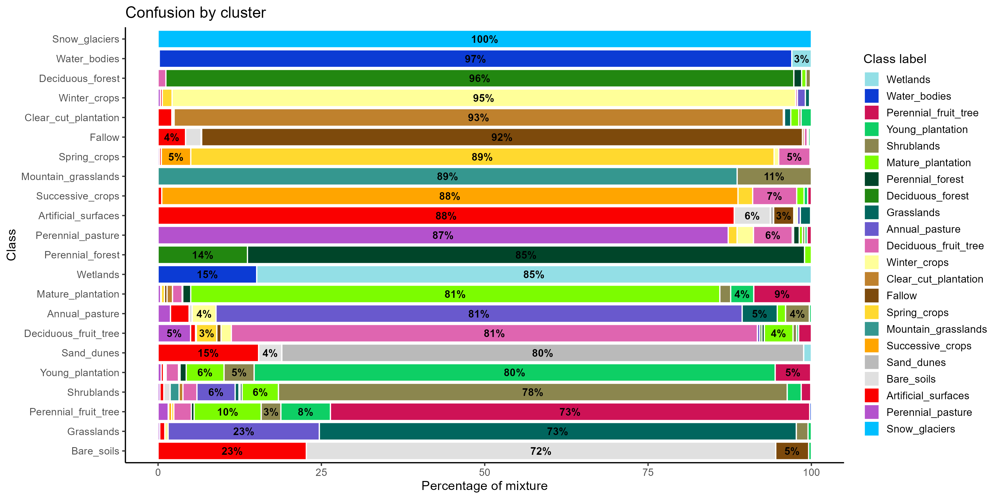
The confusion by cluster reveals that some classes are well separated, with a dominant color in their corresponding cluster, such as Snow_glaciers, Water_bodies, Deciduous_forest, Winter_crops, and Clear_cut_plantation, indicating clear and consistent spectral patterns.However, several classes show overlap with spectrally or contextually similar categories. This is the case for Perennial_fruit_tree, which displays dispersion toward plantation areas, suggesting challenges in separating perennial orchards from managed forest systems. There is also considerable confusion between Grasslands and Annual_pastures, and between Bare_soils and Artificial_surfaces.
Detecting noisy samples using SOM
The analysis based on SOM maps allows the identification and eventually removal of samples that may be confused with other classes, using the discrete probability distribution associated with each neuron, through the sits_som_clean_samples() function. This approach evaluates probabilities by considering the frequency of occurrence of samples within their corresponding cluster. For this study (both for the example and the full dataset), a probabilistic filter was applied by setting a threshold of 0.5 for both probabilities.
# Detecting noisy samples using SOM
all_eval <- sits_som_clean_samples(
som_map = som_map,
prior_threshold = 0.5,
posterior_threshold = 0.5,
keep = c("clean", "analyze", "remove"))
# Print the sample distribution based on evaluation
plot(all_eval)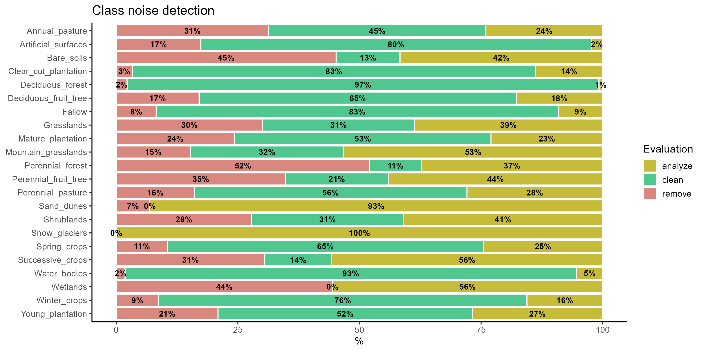
In the context of our quality analysis using SOM, the sits package provides an option to automatically remove samples labeled as remove, which are likely to contain high levels of noise. However, in our specific case, we chose not to apply this functionality, as removing these samples would further increase class imbalance, particularly affecting underrepresented classes, and compromise the integrity of the training dataset.
As a result of the analysis, 3,644 samples (17% of the dataset) were identified as potentially noisy and candidates for removal. However, their exclusion would lead to a further increase in class imbalance, with changes ranging from 0.26% to 12.5%2.
Reducing imbalances in training samples
Imbalanced training data is a common issue in Earth observation analysis, occurring when the distribution of samples across class labels is uneven. In the dataset used for this example, the two most frequent classes (Deciduous_fruit_tree and Mature_plantation) account for 22.4% of all sample units. In contrast, the two least frequent classes (Wetlands and Mountain_grasslands) represent only 0.8% of the dataset3.
Although this distribution reflects the actual land cover in the Maule and Ñuble Regions, the imbalance in sample representation is a problematic characteristic of a training dataset. Machine learning algorithms tend to perform better on classes with more training instances, while instances from minority classes are more likely to be misclassified.. Therefore, reducing sample imbalance can positively impact classification accuracy [32].
The sits_reduce_imbalance() function addresses training set imbalance by oversampling minority classes and undersampling majority ones (through SOM maps; more details in sitsbook). It uses the SMOTE method for oversampling, which generates synthetic samples by interpolating between pairs of nearest neighbors within minority class clusters.
# Minimum and maximum number will depend on how many samples there are in the smallest and largest class
balanced_samples <- sits_reduce_imbalance(
samples = samples_19HBA,
n_samples_over = 200,
n_samples_under = 800,
multicores = 8)
# Show summary of balanced samples
# Each label has between 7% and 1.7% of the full set
summary(balanced_samples)# A tibble: 22 × 3
label count prop
<chr> <int> <dbl>
1 Annual_pasture 699 0.0641
2 Artificial_surfaces 804 0.0737
3 Bare_soils 312 0.0286
4 Clear_cut_plantation 616 0.0565
5 Deciduous_forest 784 0.0719
6 Deciduous_fruit_tree 724 0.0664
7 Fallow 524 0.0480
8 Grasslands 372 0.0341
9 Mature_plantation 728 0.0667
10 Mountain_grasslands 200 0.0183
11 Perennial_forest 200 0.0183
12 Perennial_fruit_tree 676 0.0620
13 Perennial_pasture 556 0.0510
14 Sand_dunes 200 0.0183
15 Shrublands 612 0.0561
16 Snow_glaciers 200 0.0183
17 Spring_crops 468 0.0429
18 Successive_crops 226 0.0207
19 Water_bodies 568 0.0521
20 Wetlands 200 0.0183
21 Winter_crops 512 0.0469
22 Young_plantation 728 0.0667To evaluate the effect of imbalance reduction, as recommended by sits authors, we apply the SOM clustering technique introduced previously. We first generate the SOM using sits_som_map(), and then analyze the clustering results with sits_som_evaluate_clusters().
# Determine grid size for new SOM map
n_samples <- length(balanced_samples$longitude)
min_grid_size <- floor(sqrt(5 * sqrt(n_samples))) - 2
# Clustering time series using SOM
som_map_balanced <- sits_som_map(data = balanced_samples,
grid_xdim = min_grid_size,
grid_ydim = min_grid_size,
alpha = 0.05,
distance = "dtw",
rlen = 50,
mode = "pbatch")
# Produce a tibble with a summary of the mixed labels
som_eval_bal <- sits_som_evaluate_cluster(som_map_balanced)
# Show the result
plot(som_eval_bal) 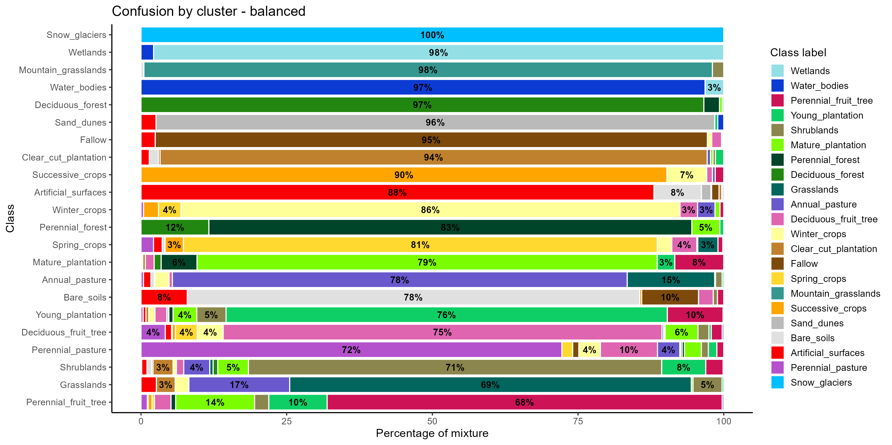
The confusion by cluster plot shows how well each class is grouped into a unique cluster after applying a combination of SMOTE oversampling and SOM-based undersampling. Snow_glaciers, Wetlands, Mountain_grasslands, and Water_bodies reach 97–100% purity in their assigned clusters, demonstrating a robust spectral distinction that was preserved or enhanced by the balancing process. Other classes, such as Fallow, Clear_cut_plantation, Succesive_crops, and Perennial_forest, also show high levels of purity (above 85%), confirming that the class balancing techniques helped consolidate their spectral representation and reduce overlap with other categories. However, some classes still present significant spectral confusion. For instance, Perennial_fruit_tree, Shrublands, Grasslands, and Perennial_pasture all show cluster mixtures, with multiple classes contributing to the same cluster. Perennial_fruit_tree, in particular, has a relatively low purity (68%), with noticeable overlaps with Mature_plantation, Young_plantation, and Deciduous_forest, suggesting persistent difficulty in distinguishing these vegetated classes.
The application of SMOTE and SOM-based balancing improved cluster purity for many classes, but some confusion remains, especially among spectrally or temporally similar vegetation types.
18.6 Training a machine learning model
The next step in creating a classified map involves training a model. We apply the sits_train() function to train a Random Forest (a CPU-based classification) classifier using the balanced sample data generated previously.
# Train a random forest model
rfor_model <- sits_train(
samples = balanced_samples,
ml_method = sits_rfor())18.7 Data cube classification
After training the machine learning model, the process continues by applying this trained model to a satellite data cube. We use the sits_classify() function, which requires a regular data cube and a trained model as input parameters; as additional information, we provide the region of interest (both for the example and the entire Macrozone) to generate a cube with cropped boundaries.
# Classify the raster image
probs_19HBA <- sits_classify(
data = cube_19HBA,
ml_model = rfor_model,
roi = roi_test,
output_dir = dir_19HBA_out,
version = "v1",
multicores = 8,
memsize = 16)
# Plot the probabilities for one class
plot(probs_19HBA, labels = "Deciduous_fruit_tree", palette = "YlGn")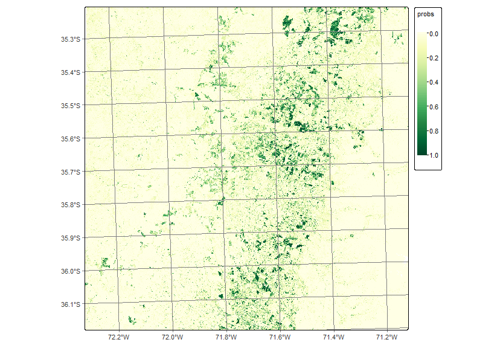
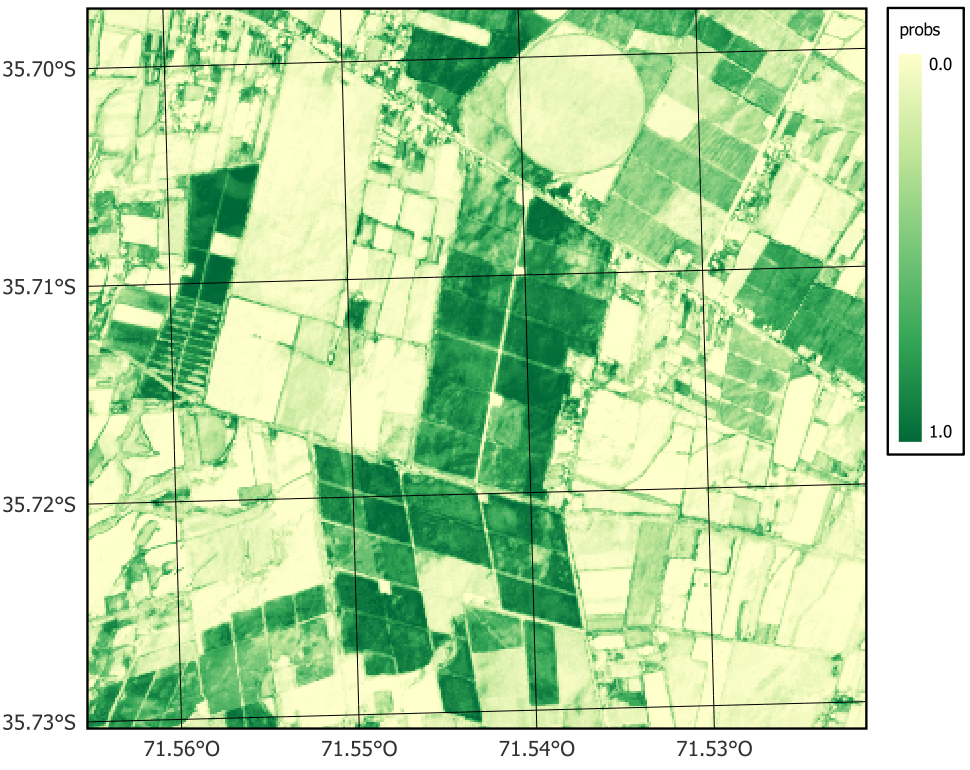
18.8 Spatial smoothing
Spatial smoothing to the classification results. This step incorporates the spatial neighborhood of each pixel, helping to reduce isolated misclassifications, particularly in transitional zones.
The post-processing method is based on the Bayesian approach to data analysis, which interprets probability as a measure of belief in an event. To properly perform Bayesian smoothing, it is necessary to estimate the local logit variance for each class, which allows for the correct setting of the model’s hyperparameters. This estimation is carried out using the sits_variance() function, which takes as input a probability data cube, a window size that defines the spatial neighborhood, and a fraction of pixels within that window to be used for variance calculation [25].
The distinct patterns of these classes are quantitatively assessed using the summary() function. When applied to variance cubes, this function reports the logit variance values corresponding to the upper interquartile range, offering insights into the spatial variability within each class.
# calculate variance
var_19HBA <- sits_variance(
cube = probs_19HBA,
window_size = 7,
neigh_fraction = 0.50,
output_dir = dir_19HBA_out,
multicores = 4,
memsize = 16)
# get the summary of the logit variance
summary(var_19HBA) Annual_pasture Artificial_surfaces Bare_soils Clear_cut_plantation
75% 1.9425 3.5100 3.6600 2.43
80% 3.1500 4.4000 4.5500 3.56
85% 4.4800 5.2000 5.2000 4.69
90% 5.4000 5.7700 5.6700 5.55
95% 6.2400 6.5905 6.4305 6.53
100% 17.7200 14.5500 14.1600 15.48
Deciduous_forest Deciduous_fruit_tree Fallow Grasslands Mature_plantation
75% 3.34 1.17 2.510 2.43 0.4300
80% 4.39 2.43 3.822 3.66 0.5900
85% 5.20 4.07 4.990 4.93 0.9500
90% 5.77 5.35 5.730 5.66 2.6100
95% 6.57 6.25 6.730 6.69 5.2005
100% 13.89 14.30 17.370 13.97 14.9900
Mountain_grasslands Perennial_forest Perennial_fruit_tree
75% 0.0000 2.43 1.1425
80% 0.0220 3.66 2.4300
85% 0.8800 4.81 4.1015
90% 1.6900 5.60 5.2700
95% 3.4665 6.52 6.0600
100% 10.1200 19.82 14.4100
Perennial_pasture Sand_dunes Shrublands Snow_glaciers Spring_crops
75% 1.76 1.69 0.41 0.00 3.90
80% 3.08 2.43 0.58 0.00 4.59
85% 4.43 3.66 0.91 0.00 5.20
90% 5.40 4.89 2.89 0.00 5.58
95% 6.13 5.60 5.40 0.00 6.03
100% 16.35 19.56 15.01 10.12 21.16
Successive_crops Water_bodies Wetlands Winter_crops Young_plantation
75% 3.76 4.59 0.88 0.91 0.62
80% 4.59 5.14 1.69 2.43 0.96
85% 5.20 5.48 2.43 3.89 2.43
90% 5.58 5.77 3.90 5.16 4.59
95% 6.10 6.25 5.20 5.95 5.98
100% 11.08 21.66 9.68 10.66 22.73To remove the outliers and classification errors, we run a smoothing procedure with sits_smooth(). The parameters window_size and neigh_fraction control how many pixels in a neighborhood the Bayesian estimator will use to calculate the local statistics. The smoothness values for the classes are set as recommended in [25] and “Bayesian smoothing for classification post-processing” following the results of the summary of the logit variances.
# Compute Bayesian smoothing
smooth_19HBA <- sits_smooth(
cube = probs_19HBA,
window_size = 7,
neigh_fraction = 0.50,
smoothness = c(
"Annual_pasture" = 7, "Perennial_fruit_tree" = 18,
"Artificial_surfaces" = 7, "Perennial_pasture" = 7,
"Bare_soils" = 15,"Sand_dunes" = 3,
"Clear_cut_plantation" = 14,"Shrublands" = 17,
"Deciduous_forest" = 10,"Snow_glaciers" = 7,
"Deciduous_fruit_tree" = 15,"Spring_crops" = 5,
"Fallow" = 5, "Successive_crops" = 5,
"Grasslands" = 14,"Water_bodies" = 5,
"Mature_plantation" = 1, "Wetlands" = 15,
"Mountain_grasslands" = 9, "Winter_crops" = 5,
"Perennial_forest" = 10,"Young_plantation" = 15
),
multicores = 4,
memsize = 12,
output_dir = dir_19HBA_out)
# Plot the result
plot(smooth_19HBA, labels = "Deciduous_fruit_tree", palette = "YlGn")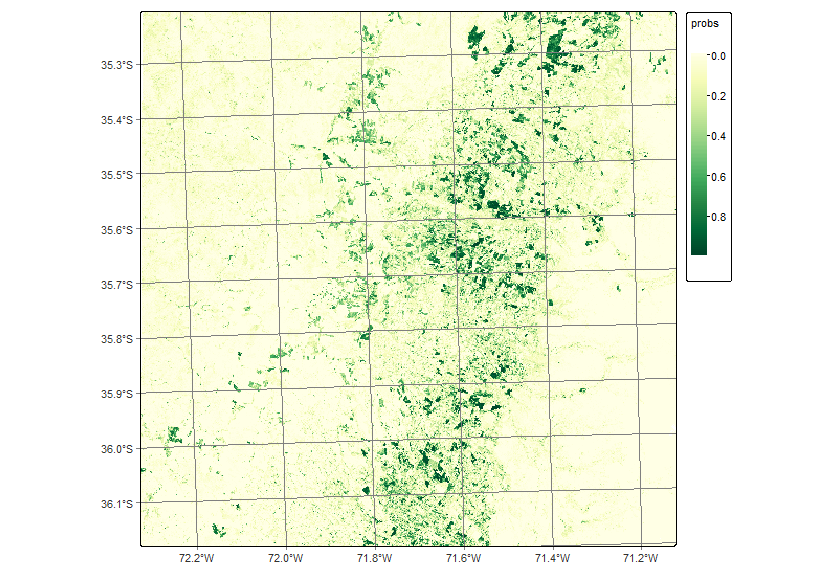
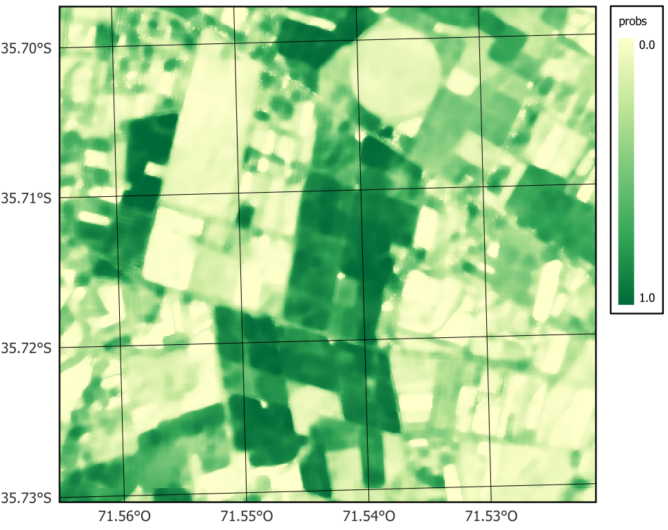
18.9 Labeling a probability data cube
The final step consists of labeling the probability map by assigning class labels to the pixels with the highest probability values. This is done by selecting, for each pixel, the class with the maximum probability among all sample classes.
# Generate the thematic map
class_19HBA <- sits_label_classification(
cube = smooth_19HBA,
multicores = 4,
memsize = 12,
output_dir = dir_19HBA_out,
version = "v1")
plot(class_19HBA,
legend_text_size = 0.7,
legend_position = "outside")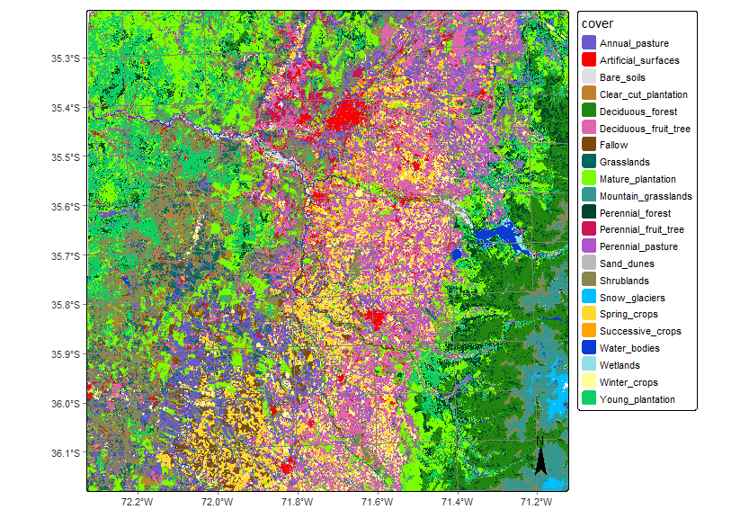
18.10 Validation and accuracy assessment of the map
Up to this point, we have generated the classification for a small region to demonstrate how the sits package can be applied in a real-world scenario. For the validation step, we extended the classification to the entire MZ4 using reference samples designed according to the proposed sampling design.
Accuracy estimation with sits applies the best practices proposed by [26], integrating three key components: sampling design, reference data collection, and accuracy estimation. Specifically, the sampling design employs a random and stratified approach, ensuring representation of all land use and land cover classes in the sample, while the statistical methods used guarantee unbiased estimates. It also simplifies sample selection by class, facilitating an accurate assessment of map categories.
For MZ4, the sampling design was carried out using Level 2 of the hierarchical classification scheme. To do this, the classes originally present at Level 3 were reclassified using the classify() function in the terra package, assigning them to their corresponding category in Level 2.
Validating the map at Level 2 represents a methodologically sound decision, as it balances the level of detail with the need for generalization, thus facilitating a robust and statistically significant evaluation of the model. Moreover, it fully meets the institutional objective of distinguishing between agricultural and non-agricultural lands Level 2 offers greater thematic disaggregation than Level 1, enabling the detection of relevant classification errors without incurring the excessive complexity of Level 3. This choice is crucial to ensure the quality and consistency of the classification, as it reduces the risk of errors due to spectral or semantic similarity between closely related classes, such as Temporary Crops and Permanent Crops.
Several studies have shown that with increasing class counts (such as at more disaggregated levels), thematic accuracy tends to decrease, and confounding errors increase significantly [33], [34]. Validation at Level 2 also provides a solid foundation for publishing the final product at Level 1, since the latter represents a direct aggregation of already validated classes with greater specificity. This increases confidence in the results and provides a rigorous benchmark for future model improvements or additional applications in territorial, agricultural, or environmental analysis contexts.
# Load the raster classified
mz4 <- rast("data/ct_chile/Extras/SENTINEL-2_MSI_MOSAIC_2020-05-03_2021-05-22_class_v1.tif")
# Level 2 reclassification matrix
reclass_lv2 <- matrix(c(
1, 81, 2, 81, 3, 81, 4, 24,
5, 61, 6, 61, 7, 41, 8, 21,
9, 21, 10,21, 11,22, 12, 22,
13, 51, 14,72, 15,82, 16, 23,
17, 23, 18,31, 19,31, 20, 31,
21, 71, 22,71, 23,81, 24, 11), ncol = 2, byrow = TRUE)
# Reclassify
mz4_reclass_nv2 <- classify(mz4, rcl = reclass_lv2)
# Export
dir_out_rec <- paste0(dir_19HBA_out, "/Reclass/")
dir.create(dir_out_rec, recursive = TRUE, showWarnings = FALSE)
writeRaster(mz4_reclass_nv2, filename = paste0(dir_out_rec, "SENTINEL-2_MSI_MOSAIC_2020-05-03_2021-05-22_class_v1.tif"))18.10.1 Sampling design
The first step in the sampling design is to load the reclassified MZ4 mosaic to Level 2. To do this, the cube label vector is defined, and the information is loaded from local files. To achieve proper visualization, the previously developed color palette is modified.
cl_tbl_eng <- tibble::tibble(name = character(), color = character())
cl_tbl_eng <- cl_tbl_eng |>
add_row(name = "Artificial_surfaces", color = "#ff0000") |>
add_row(name = "Temporary_crops", color = "#fbff01") |>
add_row(name = "Permanent_crops", color = "#fb9a99") |>
add_row(name = "Improved_pastures", color = "#8c20c9") |>
add_row(name = "Fallow", color = "#7d4a0c") |>
add_row(name = "Forest_plantation", color = "#95ffa8") |>
add_row(name = "Water_bodies", color = "#204ee3") |>
add_row(name = "Wetlands", color = "#93dfe6") |>
add_row(name = "Native_forest", color = "#054d05") |>
add_row(name = "Grasslands", color = "#01665e") |>
add_row(name = "Shrublands", color = "#8b864e") |>
add_row(name = "Non_vegetated_area", color = "#cccccc") |>
add_row(name = "Snow_glaciers", color = "#00bfff") |>
add_row(name = "No_Class", color = "white") |>
add_row(name = "No_Data", color = "white") |>
add_row(name = "No_Samples", color = "white")
# Load the color table into `sits`
sits_colors_set(cl_tbl_eng)
# Vector of labels
labels_lv2 <- c(
"11" = "Artificial_surfaces",
"21" = "Temporary_crops",
"22" = "Permanent_crops",
"23" = "Improved_pastures",
"24" = "Fallow",
"31" = "Forest_plantation",
"41" = "Water_bodies",
"51" = "Wetlands",
"61" = "Native_forest",
"71" = "Grasslands",
"72" = "Shrublands",
"81" = "Non_vegetated_area",
"82" = "Snow_glaciers"
)
# Load data cube from local files
mz4_lv2 <- sits_cube(
source = "MPC",
collection = "SENTINEL-2-L2A",
data_dir = dir_out_rec,
bands = "class",
labels = labels_lv2,
parse_info = c(
"satellite", "sensor", "tile",
"start_date", "end_date", "band", "version"
)
)
# Plot the classified mosaic
plot(mz4_lv2, legend_position = "outside")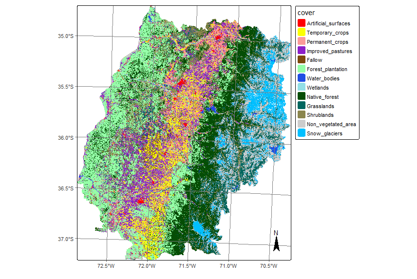
This method involves dividing the population into homogeneous subgroups (using Cochran’s methos for stratified random sampling), or strata, and then applying random sampling within each stratum. In the context of LULC mapping, the classification map serves as the basis for stratification, where each land cover class is treated as a distinct and homogeneous stratum.
For this purpose, we use the sits_sampling_design() function, which requires the prior definition of the expected_ua (user’s accuracy) for each class. In addition, it takes as parameters a std_err (standard error) of 0.01 and a rare_class_prop (proportion of rare classes) of 0.1, respectively. Three sample allocation scenarios, 75, 100, and 120 samples per class, are to be generated for subsequent evaluation and selection.
# Vector of labels
labels_lv2 <- c(
"11" = "Artificial_surfaces",
"21" = "Temporary_crops",
"22" = "Permanent_crops",
"23" = "Improved_pastures",
"24" = "Fallow",
"31" = "Forest_plantation",
"41" = "Water_bodies",
"51" = "Wetlands",
"61" = "Native_forest",
"71" = "Grasslands",
"72" = "Shrublands",
"81" = "Non_vegetated_area",
"82" = "Snow_glaciers"
)
# Load data cube from local files
mz4_lv2 <- sits_cube(
source = "MPC",
collection = "SENTINEL-2-L2A",
data_dir = dir_out_rec,
bands = "class",
labels = labels_lv2,
parse_info = c(
"satellite", "sensor", "tile",
"start_date", "end_date", "band", "version")
)# Sampling design (Level 2)
sampling_design <- sits_sampling_design(
cube = mz4_lv2,
expected_ua = c(
Artificial_surfaces = 0.75,
Temporary_crops = 0.8,
Permanent_crops = 0.8,
Improved_pastures = 0.8,
Fallow = 0.8,
Forest_plantation = 0.75,
Water_bodies = 0.75,
Wetlands = 0.7,
Native_forest = 0.75,
Grasslands = 0.7,
Shrublands = 0.7,
Non_vegetated_area = 0.75,
Snow_glaciers = 0.7
),
std_err = 0.01,
alloc_options = c(120, 100, 75),
rare_class_prop = 0.1
)
# Show sampling design
sampling_design prop expected_ua std_dev equal alloc_120 alloc_100
Artificial_surfaces 0.01102111 0.75 0.433 143 120 100
Temporary_crops 0.06698658 0.8 0.4 143 120 100
Permanent_crops 0.05512354 0.8 0.4 143 120 100
Improved_pastures 0.1025799 0.8 0.4 143 132 172
Fallow 0.007910668 0.8 0.4 143 120 100
Forest_plantation 0.2326992 0.75 0.433 143 300 390
Water_bodies 0.007476513 0.75 0.433 143 120 100
Wetlands 0.0006144286 0.7 0.458 143 120 100
Native_forest 0.1782748 0.75 0.433 143 229 299
Grasslands 0.09582032 0.7 0.458 143 120 100
Shrublands 0.09356777 0.7 0.458 143 120 100
Non_vegetated_area 0.09586879 0.75 0.433 143 120 100
Snow_glaciers 0.05205643 0.7 0.458 143 120 100
alloc_75 alloc_prop
Artificial_surfaces 75 21
Temporary_crops 75 125
Permanent_crops 75 103
Improved_pastures 222 191
Fallow 75 15
Forest_plantation 503 433
Water_bodies 75 14
Wetlands 75 1
Native_forest 386 332
Grasslands 75 178
Shrublands 75 174
Non_vegetated_area 75 178
Snow_glaciers 75 97 18.10.2 Stratified random sampling
The next step is to select a sampling design option to generate a set of points through stratified sampling. These points will later serve as the basis for accuracy assessment. In this case, we select the alloc_100 option from the sampling design to generate a set of stratified samples and save the results in a shp file.
# select samples
samples <- sits_stratified_sampling(cube = mz4_lv2,
sampling_design, "alloc_100",
shp_file = paste0(dir_19HBA_out, "/samples_MZ4_nv2.shp"))The resulting output is a shapefile containing point features with geographic coordinates (latitude and longitude) and their corresponding class labels derived from the classified map. During sample generation, an oversampling parameter is applied to address uncertainties in areas such as class boundaries or areas with high classification ambiguity. This strategy enables the exclusion of points with uncertain class assignments, thereby enhancing the reliability of the validation process. By avoiding ambiguous samples, the final set of points more accurately represents the reference classes and reduces potential bias introduced by misclassified pixels.

After reviewing and labeling the sampling points in QGIS, a shp object was generated containing the ground-truth label for each point corresponding to the study season.
18.10.3 Accuracy assessment of classified sampling
To measure the accuracy of classified images, an area weighting technique is used. The need for area-weighted estimates arises because the classes of uses and/or coverages are not evenly distributed across space.
To produce adjusted area estimates for classified maps, the sits_accuracy() function is used. This function requires two main inputs: the classified data cube and a set of well-selected reference points obtained through stratified random sampling.
mz4_val_lv2 <- st_read("data/ct_chile/Samples/samples_validation_mz4.shp")
area_acc <- sits_accuracy(
data = mz4_lv2,
validation = mz4_val_lv2
)
# Print the area estimated accuracy
area_accArea Weighted Statistics
Overall Accuracy = 0.92
Area-Weighted Users and Producers Accuracy
User Producer
Artificial_surfaces 0.84 1.00
Temporary_crops 1.00 0.83
Permanent_crops 0.71 0.86
Improved_pastures 0.78 0.95
Fallow 0.82 0.98
Forest_plantation 0.95 0.90
Water_bodies 0.94 1.00
Wetlands 0.78 1.00
Native_forest 0.97 0.96
Grasslands 0.99 0.95
Shrublands 0.82 0.87
Non_vegetated_area 1.00 0.92
Snow_glaciers 0.86 1.00
Mapped Area x Estimated Area (ha)
Mapped Area (ha) Error-Adjusted Area (ha)
Artificial_surfaces 47838.87 40081.21
Temporary_crops 290765.80 350915.74
Permanent_crops 239272.40 199545.73
Improved_pastures 445264.02 363767.79
Fallow 34337.50 28671.17
Forest_plantation 1010067.34 1071241.09
Water_bodies 32452.98 30543.98
Wetlands 2667.02 2074.35
Native_forest 773829.84 785940.71
Grasslands 415923.14 433571.56
Shrublands 406145.63 384067.89
Non_vegetated_area 416133.55 454642.67
Snow_glaciers 225959.11 195593.30
Conf Interval (ha)
Artificial_surfaces 3295.30
Temporary_crops 21397.29
Permanent_crops 26315.61
Improved_pastures 29258.14
Fallow 2637.04
Forest_plantation 39188.45
Water_bodies 1377.78
Wetlands 527.08
Native_forest 21684.53
Grasslands 16649.55
Shrublands 34881.45
Non_vegetated_area 14373.72
Snow_glaciers 14027.70The results show an overall accuracy of 92%, demonstrating good performance of the classification model based on satellite image time series. Stable classes, such as native forest, water bodies, and artificial surfaces, exhibit high user and producer accuracy values, reflecting a clear spectro-temporal distinction throughout the year. On the other hand, agricultural classes, while also achieving good levels of accuracy, exhibit certain differences between the accuracy metrics, especially in permanent crops and improved pastures. This may be associated with intra-class variability or the coexistence of land covers with similar temporal signatures.
The comparison between the pixel-mapped area and the error-adjusted area reveals differences for several classes (Figure 18.24), particularly those with lower individual accuracy. While a strictly linear relationship between class accuracy and the required adjustment level is not observed, trends are identified: classes with major discrepancies between user and producer accuracy (such as permanent crops and improved pastures) show more substantial adjustments, reflecting the presence of systematic errors of omission and commission. In contrast, stable and well-defined spectro-temporal classes, such as native forest, forest plantations, or water bodies, show smaller differences between the two estimates. Additionally, the figure includes error bars representing confidence intervals, and it is worth noting that the coefficient of variation (CV) can also be computed. Both the confidence interval and the CV are quality indicators widely used by national statistical offices (NSOs) when releasing survey-based estimates, as they provide transparent metrics of reliability. What is novel in this context is that such measures are not commonly applied in the field of Land Cover and Land Use (LCLU) mapping, despite their relevance for ensuring statistical rigor.
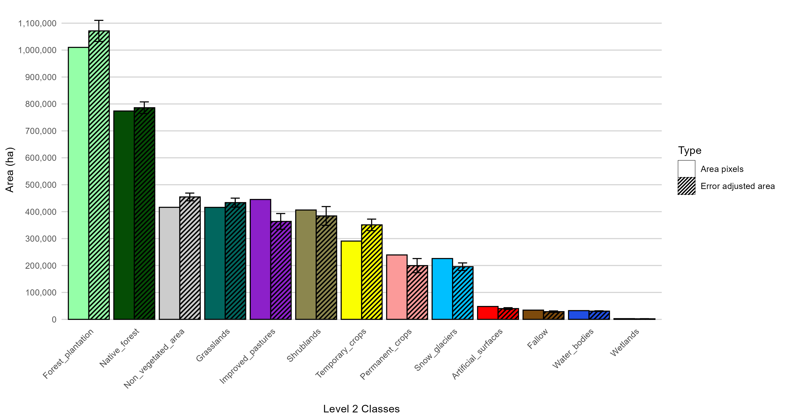
18.11 Discussion
Institutional relevance and purpose of the map
The development of the new Land Use and Land Cover (LULC) map with an agricultural focus addresses a critical gap in Chile’s agricultural statistical system: the lack of a cartographic product explicitly designed to support official agricultural statistics with national coverage and high spatial precision. Unlike previous initiatives, such as [35], CLDynamicLandCover [36], MapBiomas Chile, or global products like WorldCover and Copernicus LAC, this map originates from within the national statistical system itself. Its main objectives are to strengthen the agricultural sampling frame, improve the estimation of cultivated areas, and enhance operational efficiency between censuses. This initiative positions the National Institute of Statistics (INE) as a key agent in the modernization of agricultural statistics, in line with international recommendations to integrate Earth observation into official data systems [37], [38].
From a methodological perspective, the INE LULC map incorporates time series of satellite imagery, representing a significant advancement over traditional approaches based on single-date imagery or seasonal composites [39]. This strategy enables the capture of intra-annual crop phenology, including practices such as successive plantings, fallow periods, and seasonal cycles. Combined with a spatial resolution of 10 meters, the approach enables the detection of small agricultural plots and within-field heterogeneity, thereby enhancing the representativeness and accuracy of cultivated area estimates [40]. In contrast to global products with generic legends, the INE classification scheme is tailored to Chile’s productive landscape and institutional standards, ensuring that the generated information is both technically robust and operationally relevant for the design, stratification, and updating of agricultural surveys. Furthermore, the approach is structured around macrozones (a zonation of the country), which facilitate optimal scalability of the process at the national level.
Classification and sampling scheme in LULC mapping
The LULC classification scheme defined for this work follows a three-level hierarchical structure, primarily based on the phenological and temporal characteristics of agricultural classes. This methodological decision stems from lessons learned during the pilot phase conducted in the Maule Region, where the classification relied solely on agronomic criteria. Unlike that approach, the current scheme acknowledges the dynamic nature of certain land cover types, replacing the concept of static cover with one that incorporates interannual variability. As such, it includes classes such as winter and spring crops, as well as deciduous and evergreen perennial species, according to their phenological cycles, which enhances the representativeness of agricultural classes [18], [41].
The hierarchical design enables multiple applications throughout the workflow. The 24 Level 3 classes were used to build training samples and train the classification model. The 13 Level 2 classes were employed for statistical validation of the map, following best practices to ensure enough samples per category. Finally, the eight Level 1 classes were designed to align with the official CCUS 1.0 classification scheme of the INE, ensuring institutional compatibility. This hierarchical approach is widely recommended in the LULC classification literature for its ability to improve thematic accuracy, reduce class confusion, and facilitate multi-scale comparisons [41].
The use of satellite image time series was essential for constructing both the classification scheme and the training samples, as it enabled the identification of phenological differences among agricultural classes. This temporal dimension is particularly useful for distinguishing spectrally similar land cover types with different growth cycles, such as winter vs. spring crops, or deciduous vs. evergreen fruit trees. Phenology serves as a distinctive signature that enhances spectral-temporal separability, as broadly reported in the literature[16], [42].
To construct the training samples, representative polygons for each Level 3 class were delineated using cadastral data, administrative records, and NDVI time-series analysis. From these polygons, labeled points were extracted using, for the first time, a sampling strategy proportional to polygon area rather than a fixed number of points. Minimum and maximum point thresholds were set, and polygons larger than 25 hectares were excluded. This approach yielded a more representative training dataset in terms of the spatial distribution of land cover types [43].
Construction of macrozones as a basis for territorial modeling
Dividing the national territory into homogeneous zones is a key strategy for improving both the accuracy and efficiency of LULC mapping. Stratifying the study area into ecologically similar regions helps reduce spectral heterogeneity, allowing classifiers to better adapt to local environmental conditions, such as climate, vegetation, or topography, which in turn enhances classification accuracy [11], [44]. In geographically diverse contexts like Chile, this type of zonation is particularly advantageous, as it enables the analysis of spectrally coherent imagery and improves the representativeness of sampling designs for calibration and validation, ensuring a more equitable and efficient distribution of samples across both geographic and spectral spaces [45].
Additionally, subdividing the territory supports the detection of localized patterns and dynamics, such as deforestation, urban expansion, or crop rotation, that may be obscured in broader-scale analyses. From a technical standpoint, territorial fragmentation also optimizes the use of computational resources by reducing task complexity, enabling parallel processing, and significantly shortening computing times [11], [46], [47]. In practice, this approach allows the independent execution of the LULC classification workflow within each territorial unit, defined at a scale smaller tgan national but larger than regional division, thus ensuring that satellite data inputs can be processed effectively without exceeding the capabilities or processing time constraints of a dedicated computing
Inclusion of the DEM as a feature for modeling
An important finding from the modeling process, as well as from the preceding pilot study, was the contribution of including topographic variables derived from Digital Elevation Models (DEMs) in the classification. In a mountainous country like Chile, elevation and slope strongly influence vegetation distribution and agricultural practices, introducing spectral variations associated with climate and terrain [48]. Integrating these factors into the model significantly improved classification accuracy, in line with findings reported by several authors[49]–[51].
Our experience confirms that Chile’s mountainous geography benefits from this approach, as expected based on international evidence. National initiatives, such as those by [35], [36], and MapBiomas Chile, have already incorporated elevation data into their methodologies, recognizing that the inclusion of altitudinal gradients susbtantially enhances the discrimination of classes influenced by topography, for example, distinguishing between valley vegetation and high-altitude vegetation.
Analysis of the quality of training data
One of the main methodological challenges addressed was the handling of potentially noisy or atypical training data. Using Self-Organizing Maps (SOM), it was possible to identify internal dissimilarities within a subset of samples [28], indicating the presence of noise. Although the sits package allows for the automatic filtering of such observations, we opted to retain them to avoid exacerbating class imbalance, which could have resulted in the complete loss of a minority class. Recent studies warn that severely imbalanced training sets can bias model learning [32], [52]. For this reason, we adopted an alternative approach inspired by [30], replacing filtering with a combined statistical balancing strategy: oversampling of minority classes using SMOTE and undersampling of dominant classes using SOM, a technique that reduces sampling variance and bias while preserving the intrinsic statistical structure of the original dataset [53], [54].
This strategy enabled the retention of all classes, generating synthetic examples where necessary without discarding valuable information. Upon re-evaluating internal consistency through cluster analysis, several cover types showed notable improvements: snow, wetlands, and water bodies achieved cluster purities between 97% and 100%, while complex agricultural and forest classes, such as successive crops, native forest, or harvested plantations, exceeded 83% purity. These results suggest that balancing contributed to a more consolidated spectral-temporal representation of these categories. However, some dominant classes experienced slight decreases in purity, likely due to the increased diversity introduced by oversampling or even the potential injection of synthetic noise [55]. This was the case for perennial fruit crops, overlapping with closely related classes such as forest plantations and deciduous forests. These residual confusions highlight the persistent difficulty of separating phenologically or structurally similar classes while also offering clear insight into which categories could benefit from additional discriminative variables, such as SAR bands or textural metrics [56]. In the future, we propose evaluating more sophisticated techniques such as Geometric SMOTE, which could allow for the generation of more coherent synthetic samples and further improvement in training consistency [55], [57].
Model evaluation
The classification model achieved a globally satisfactory performance, with an area-weighted overall accuracy of 0.92, validating both the use of satellite image time series and the improvements applied in the preparation and balancing of the training dataset [24], [28]. However, a disaggregated analysis by class reveals disparities: agricultural classes such as Permanent crops and Improved Pastures exhibit commission errors (low User’s Accuracy and high Producer’s Accuracy), while Temporary crops show omission errors (low Producer’s Accuracy and high User’s Accuracy), reflecting limitations in the spectral-temporal separability of certain land cover types. These inconsistencies carry over into area estimations, where differences were observed between pixel-count-based mapped areas and validation-adjusted areas, particularly for classes such as Forest plantation, Temporary crops, and Shrublands.
To correct these biases, an adjusted area estimation was implemented following the statistical framework proposed by [27], which accounts for errors derived from the confusion matrix and employs a stratified random sampling design. This approach produced more accurate area estimates, incorporating confidence intervals, and enhancing the transparency of the final product [58]. Despite the overall improvement, challenges remain in differentiating spectrally or phenologically similar classes, such as Permanent crops and Forest plantation, highlighting the need to integrate additional discriminative variables, such as SAR bands or textural metrics, to improve class separability [56]. In this way, the adopted approach not only ensures statistical rigor and traceability but also pinpoints priority areas for future model refinement.
Advanced applications of remote sensing and deep learning in official statistics
One of the most promising improvements to be incorporated in future stages of this work is the use of deep learning techniques, which offer the ability to process satellite time series data while accounting for the temporal sequence of observations. This capability allows for the explicit modeling of spectral dynamics throughout the year, particularly valuable for land cover classes with strong seasonality or well-defined phenological cycles [59]–[61]. Numerous studies have demonstrated that deep neural networks such as 3D Convolutional Neural Networks (3D-CNNs) or Long Short-Term Memory (LSTM) models outperform traditional algorithms like Random Forests or Support Vector Machines in multitemporal classification tasks for crops and land cover [62], [63].
Beyond deep learning, remote sensing offers a broad set of tools with high potential for enhancing the production of official statistics. Below are key applications with relevance to agriculture.
First, remote sensing can be used to automatically map rural plots, which would streamline census and survey operations and facilitate the registration of farmers and production units [4].
Additionally, satellite-based crop type mapping enables the generation of highly accurate statistics on cultivated areas by capturing the phenological development of crops. These multitemporal classifications are crucial for designing more robust sampling frames for agricultural surveys, and they have proven effective in monitoring intra- and interannual shifts in cropping patterns [64], [65].
Remote sensing also makes it possible to estimate crop yields, using either statistical regression models or simulations based on spectral indices. These yield estimations can complement traditional surveys, especially in data-scarce regions, and have been applied by FAO and programs such as AMIS and GEOGLAM for food security monitoring [37], [66].
Moreover, remote sensing techniques can significantly contribute to other domains of official statistics, such as:
- Sample design, through land use-based stratification and the delineation of primary sampling units [2].
- Disaster mapping and forecasting, by using optical and radar sensors to identify areas affected by droughts, wildfires, or floods [67].
- Environmental and climate statistics, including deforestation monitoring, soil moisture, albedo, and climate change indicators [68].
Limitations and opportunities for improvement
Despite achieving satisfactory results in terms of evaluation metrics, this process presented certain methodological and technical limitations, as well as clear opportunities to enhance its precision and robustness in future versions.
Limitations
One of the main limitations relates to the spectral nature of the input data. Relying exclusively on optical bands and variables derived from the digital elevation model limited the model’s ability to discriminate between certain thematic classes, particularly in areas where land covers share similar spectral characteristics, such as perennial fruit trees and forest plantations.
Additionally, during the exploration of improvements for MZ4, the integration of radar imagery was considered as a complementary data source. However, radar images with radiometric correction were not available for that area, which prevented their inclusion in this version.
Furthermore, persistent cloud cover in some macrozones, particularly in southern Chile and coastal areas, can restrict the availability of usable optical satellite imagery, especially during the winter months, limiting the density and quality of the time series.
Opportunities for Improvement
Key opportunities for improvement include integrating new data sources into the satellite data cube, particularly radar-derived variables (e.g., from Sentinel-1), as well as incorporating texture metrics computed from optical imagery.
Radar data would contribute an additional structural dimension to the analysis, as it captures information on terrain roughness, vegetation structure, and soil moisture. Importantly, radar imagery is not affected by atmospheric conditions, making it highly valuable in cloud-prone areas where optical data availability is limited [56], [60].
Meanwhile, the inclusion of texture metrics allows for the quantification of spatial patterns within land covers, facilitating the differentiation of spectrally similar but spatially distinct classes. Texture features, commonly derived using methods such as the Gray Level Co-occurrence Matrix (GLCM), have been shown to improve the discrimination of agricultural, forested, and transitional land cover types [70], [71].
This project marks a significant step forward in the application of remote sensing for the classification of agricultural land cover and its integration into official statistics. However, its future success will depend on the ability to overcome the identified limitations and realize the outlined improvement opportunities.
18.12 Conclusions
The work carried out by the Chilean National Statistics Institute demonstrates key methods for using remote sensing to generate reliable, high-quality agricultural statistics. By adopting a hierarchical-phenological classification scheme, it accurately captures the dynamic nature of the agricultural soils in the territory, including crop rotations, fallow periods, and/or permanent crop areas that are not reflected in static classifications and are crucial for the proper design of sampling frames.
The generation of training samples is one of the critical aspects of the workflow for obtaining land use and land cover maps. To use photointerpretation, NDVI curve analysis, RGB seasonal compositions, and the creation of labeled points for machine learning model training, a technique was devised to leverage the information that was available, both inside and outside the organization. It is also highlighted that the combination of satellite image time series with topographic information significantly improves thematic accuracy, especially in geographically complex environments.
This work also confirms that quality control and training data balancing procedures contribute to more generalizable models, while analysis tools such as SOM clusters help diagnose where challenges persist in the training data. The creation of this LULC map with an agronomic focus represents a strategic advance for agricultural statistics in Chile. Its benefits are evident: it provides updated and comprehensive inputs for designing more efficient sampling frames and surveys, as evidenced by the reviewed literature on high-temporal-resolution thematic maps.
The results reaffirm the importance of integrating new remote sensing methodologies in the production of agricultural statistics and offer new insights, from the value of phenological curves for discriminating crops to the importance of topographic data in complex landscapes. Looking ahead, scaling up this approach nationwide will strengthen the precision and reliability of agricultural area delimitation. This requires expanding predictor variables and, when feasible, exploring deep learning techniques to further enhance future versions.
References
[1]
I. N. de E. INE, “Documento de trabajo. Elaboración de un mapa de uso de suelo a partir de imágenes satelitales: Caso de estudio en la Región del Maule,” Santiago, Chile, May 2025. [Online]. Available: https://www.ine.gob.cl/docs/default-source/documentos-de-trabajo/20250527_documento_trabajo_piloto_lc.pdf?sfvrsn=8d17acd9_2.
[2]
J. Gallego, “Use of remote sensing for the design of sampling frames,” J. Delincé, Ed. Rome: Handbook of the Global Strategy to improve Agricultural; Rural Statistics (GSARS), 2017.
[3]
J. Delincé, “The cost-effectiveness of remote sensing in agricultural statistics,” J. Delincé, Ed. Rome: Handbook of the Global Strategy to improve Agricultural; Rural Statistics (GSARS), 2017.
[4]
A. Davidson, T. Fisette, H. McNairn, and B. Daneshfar, “Detailed crop mapping using remote sensing data (crop data layers),” J. Delince, Ed. Rome: Handbook of the Global Strategy to improve Agricultural; Rural Statistics (GSARS), 2017.
[5]
P. Defourny, “Land cover mapping and monitoring,” J. Delincé, Ed. Rome: Handbook of the Global Strategy to improve Agricultural; Rural Statistics (GSARS), 2017.
[6]
P. Sarricolea, M. Herrera-Ossandon, and Ó. Meseguer-Ruiz, “Climatic regionalisation of continental Chile,” Journal of Maps, vol. 13, no. 2, pp. 66–73, Nov. 2017, doi: 10.1080/17445647.2016.1259592.
[7]
F. Santibáñez Q., P. V. Santibáñez, C. T. Caroca, and P. Gonzales, Atlas agroclimático de Chile. Santiago: Universidad de Chile, 2017.
[8]
F. Luebert and P. Pliscoff, Sinopsis bioclimática y vegetacional de Chile, Segunda edición. Santiago de Chile: Editorial Universitaria, 2017.
[9]
ODEPA, “Atlas rural de Chile,” 2022. [Online]. Available: https://hdl.handle.net/20.500.12650/71509.
[10]
H. E. Beck, N. E. Zimmermann, T. R. McVicar, N. Vergopolan, A. Berg, and E. F. Wood, “Present and future Köppen-Geiger climate classification maps at 1-km resolution,” Scientific Data, vol. 5, no. 1, p. 180214, Oct. 2018, doi: 10.1038/sdata.2018.214.
[11]
G. O. Ojwang et al., “An integrated hierarchical classification and machine learning approach for mapping land use and land cover in complex social-ecological systems,” Frontiers in Remote Sensing, vol. 4, p. 1188635, Mar. 2024, doi: 10.3389/frsen.2023.1188635.
[12]
Md. S. Chowdhury, “GIS based method for mapping actual LULC by combining seasonal LULCs,” MethodsX, vol. 11, p. 102472, Dec. 2023, doi: 10.1016/j.mex.2023.102472.
[13]
D. T. Myers, D. Jones, D. Oviedo-Vargas, J. P. Schmit, D. L. Ficklin, and X. Zhang, “Seasonal variation in land cover estimates reveals sensitivities and opportunities for environmental models,” Hydrology and Earth System Sciences, vol. 28, no. 23, p. 52955310, 2024, doi: 10.5194/hess-28-5295-2024.
[14]
Y. Guo, H. Xia, L. Pan, X. Zhao, and R. Li, “Mapping the Northern Limit of Double Cropping Using a Phenology-Based Algorithm and Google Earth Engine,” Remote Sensing, vol. 14, no. 4, p. 1004, Feb. 2022, doi: 10.3390/rs14041004.
[15]
D. R. Oetter, W. B. Cohen, M. Berterretche, T. K. Maiersperger, and R. E. Kennedy, “Land cover mapping in an agricultural setting using multiseasonal Thematic Mapper data,” Remote Sensing of Environment, vol. 76, no. 2, pp. 139–155, May 2001, doi: 10.1016/S0034-4257(00)00202-9.
[16]
B. D. Wardlow and S. L. Egbert, “Large-area crop mapping using time-series MODIS 250 m NDVI data: An assessment for the U.S. Central Great Plains,” Remote Sensing of Environment, vol. 112, no. 3, pp. 1096–1116, Mar. 2008, doi: 10.1016/j.rse.2007.07.019.
[17]
Z. Zhu and C. E. Woodcock, “Continuous change detection and classification of land cover using all available Landsat data,” Remote Sensing of Environment, vol. 144, pp. 152–171, 2014, doi: 10.1016/j.rse.2014.01.011.
[18]
Y. Zhou et al., “Hierarchical classification for improving parcel-scale crop mapping using time-series Sentinel-1 data,” Journal of Environmental Management, vol. 369, p. 122251, Oct. 2024, doi: 10.1016/j.jenvman.2024.122251.
[19]
Y. Zhou, J. Luo, L. Feng, Y. Yang, Y. Chen, and W. Wu, “Long-short-term-memory-based crop classification using high-resolution optical images and multi-temporal SAR data,” GIScience & Remote Sensing, vol. 56, no. 8, pp. 1170–1191, Nov. 2019, doi: 10.1080/15481603.2019.1628412.
[20]
H. Md-Tahir et al., “Localized Crop Classification by NDVI Time Series Analysis of Remote Sensing Satellite Data; Applications for Mechanization Strategy and Integrated Resource Management,” AgriEngineering, vol. 6, no. 3, pp. 2429–2444, Jul. 2024, doi: 10.3390/agriengineering6030142.
[21]
S. Ullah et al., “Multi-Temporal and Multi-Resolution RGB UAV Surveys for Cost-Efficient Tree Species Mapping in an Afforestation Project,” Remote Sensing, vol. 17, no. 6, p. 949, Mar. 2025, doi: 10.3390/rs17060949.
[22]
D. Schepaschenko et al., “Recent Advances in Forest Observation with Visual Interpretation of Very High-Resolution Imagery,” Surveys in Geophysics, vol. 40, no. 4, pp. 839–862, Jul. 2019, doi: 10.1007/s10712-019-09533-z.
[23]
A. Elmes et al., “Accounting for Training Data Error in Machine Learning Applied to Earth Observations,” Remote Sensing, vol. 12, no. 6, p. 1034, 2020, doi: 10.3390/rs12061034.
[24]
R. Simoes et al., “Satellite image time series analysis for big earth observation data,” Remote Sensing, vol. 13, no. 13, p. 2428, 2021, doi: 10.3390/rs13132428.
[25]
G. Camara et al., “Bayesian Inference for Post-Processing of Remote-Sensing Image Classification,” Remote Sensing, vol. 16, no. 23, p. 4572, 2024, doi: 10.3390/rs16234572.
[26]
P. Olofsson, G. M. Foody, S. V. Stehman, and C. E. Woodcock, “Making better use of accuracy data in land change studies: Estimating accuracy and area and quantifying uncertainty using stratified estimation,” Remote Sensing of Environment, vol. 129, pp. 122–131, 2013, doi: 10.1016/j.rse.2012.10.031.
[27]
P. Olofsson, G. M. Foody, M. Herold, S. V. Stehman, C. E. Woodcock, and M. A. Wulder, “Good practices for estimating area and assessing accuracy of land change,” Remote Sensing of Environment, vol. 148, pp. 42–57, 2014.
[28]
L. A. Santos, K. Ferreira, M. Picoli, G. Camara, R. Zurita-Milla, and E.-W. Augustijn, “Identifying Spatiotemporal Patterns in Land Use and Cover Samples from Satellite Image Time Series,” Remote Sensing, vol. 13, no. 5, p. 974, 2021, doi: 10.3390/rs13050974.
[29]
Y. Finegold, E. Lindquist, R. D’Annuzio, and M. Sandker, “Map Accuracy Assessment and Area Estimation: A Practical Guide,” FAO, Rome, National forest monitoring assessment working paper No.46, 2016.
[30]
L. de Simone et al., “Quality control of training samples for agricultural statistics using Earth observation,” Statistical Journal of the IAOS, p. 18747655251338033, 2025, doi: 10.1177/18747655251338033.
[31]
J. Vesanto and E. Alhoniemi, “Clustering of the self-organizing map,” IEEE Transactions on Neural Networks, vol. 11, no. 3, pp. 586–600, 2000, doi: 10.1109/72.846731.
[32]
J. M. Johnson and T. M. Khoshgoftaar, “Survey on deep learning with class imbalance,” Journal of Big Data, vol. 6, no. 1, p. 27, 2019, doi: 10.1186/s40537-019-0192-5.
[33]
G. M. Foody, “Status of land cover classification accuracy assessment,” Remote Sensing of Environment, vol. 80, no. 1, pp. 185–201, Apr. 2002, doi: 10.1016/s0034-4257(01)00295-4.
[34]
J. Radoux, C. Lamarche, E. Van Bogaert, S. Bontemps, C. Brockmann, and P. Defourny, “Automated Training Sample Extraction for Global Land Cover Mapping,” Remote Sensing, vol. 6, no. 5, pp. 3965–3987, May 2014, doi: 10.3390/rs6053965.
[35]
Y. Zhao et al., “Detailed dynamic land cover mapping of Chile: Accuracy improvement by integrating multi-temporal data,” Remote Sensing of Environment, vol. 183, pp. 170–185, 2016, doi: 10.1016/j.rse.2016.05.016.
[36]
M. Galleguillos, A. Ceballos-Comisso, F. Gimeno, and M. Zambrano-Bigiarini, “CLDynamicLandCover.” Zenodo, 2024, doi: 10.5281/zenodo.13153631.
[37]
FAO, “Handbook on remote sensing for agricultural statistics,” 2017, [Online]. Available: https://openknowledge.fao.org/handle/20.500.14283/ca6394en.
[38]
“Task team on earth observation data UN-CEBD.” [Online]. Available: https://unstats.un.org/bigdata/task-teams/earth-observation/index.cshtml.
[39]
H. Zhang et al., “Mapping annual 10-m soybean cropland with spatiotemporal sample migration,” Scientific Data, vol. 11, no. 1, May 2024, doi: 10.1038/s41597-024-03273-5.
[40]
T. Ren, H. Xu, X. Cai, S. Yu, and J. Qi, “Smallholder Crop Type Mapping and Rotation Monitoring in Mountainous Areas with Sentinel-1/2 Imagery,” Remote Sensing, vol. 14, no. 3, p. 566, Jan. 2022, doi: 10.3390/rs14030566.
[41]
A. Waśniewski, A. Hościło, and M. Chmielewska, “Can a Hierarchical Classification of Sentinel-2 Data Improve Land Cover Mapping?” Remote Sensing, vol. 14, no. 4, p. 989, Feb. 2022, doi: 10.3390/rs14040989.
[42]
B. D. Wardlow, S. L. Egbert, and J. H. Kastens, “Analysis of time-series MODIS 250m vegetation index data for crop classification in the U.S. Central Great Plains,” Remote Sensing of Environment, vol. 108, no. 3, pp. 290–310, Jun. 2007, doi: 10.1016/j.rse.2006.11.021.
[43]
H. Zhang, J. He, S. Chen, Y. Zhan, Y. Bai, and Y. Qin, “Comparing Three Methods of Selecting Training Samples in Supervised Classification of Multispectral Remote Sensing Images,” Sensors, vol. 23, no. 20, p. 8530, Oct. 2023, doi: 10.3390/s23208530.
[44]
B. Kavhu, Z. E. Mashimbye, and L. Luvuno, “Climate-Based Regionalization and Inclusion of Spectral Indices for Enhancing Transboundary Land-Use/Cover Classification Using Deep Learning and Machine Learning,” Remote Sensing, vol. 13, no. 24, p. 5054, Dec. 2021, doi: 10.3390/rs13245054.
[45]
S. Dong, H. Guo, Z. Chen, Y. Pan, and B. Gao, “Spatial Stratification Method for the Sampling Design of LULC Classification Accuracy Assessment: A Case Study in Beijing, China,” Remote Sensing, vol. 14, no. 4, p. 865, Feb. 2022, doi: 10.3390/rs14040865.
[46]
T. R. Loveland and J. M. Merchant, “Ecoregions and Ecoregionalization: Geographical and Ecological Perspectives,” Environmental Management, vol. 34, no. S1, pp. S1–S13, Apr. 2004, doi: 10.1007/s00267-003-5181-x.
[47]
M. C. Hansen et al., “High-Resolution Global Maps of 21st-Century Forest Cover Change,” Science, vol. 342, no. 6160, pp. 850–853, 2013.
[48]
F. Luebert and P. Pliscoff, “Clasificación de pisos de vegetación y análisis de representatividad ecológica de áreas propuestas para la protección en la ecorregión valdiviana,” Valdivia, Chile, Dec. 2004. [Online]. Available: https://wwflac.awsassets.panda.org/downloads/informe_ecorregion_valdiviana_luebert_pliscoff.pdf#:~:text=pero%20se%20manifiestan%20en%20la,azonales%20de%20diferentes%20tipos%2C%20especialmente.
[49]
F. Bilücan and T. Kavzoglu, “The effect of auxiliary data (slope, aspect and elevation ) on land use/land cover classification accuracy of sentinel-2A image using random forest classifier,” May 2021.
[50]
D. Pacheco-Prado, E. Bravo-López, and L. Á. Ruiz, “Mapping Polylepis Forest Using Sentinel, PlanetScope Images, and Topographical Features with Machine Learning,” Remote Sensing, vol. 16, no. 22, p. 4271, Nov. 2024, doi: 10.3390/rs16224271.
[51]
S. E. Pizarro, N. G. Pricope, D. Vargas-Machuca, O. Huanca, and J. Ñaupari, “Mapping Land Cover Types for Highland Andean Ecosystems in Peru Using Google Earth Engine,” Remote Sensing, vol. 14, no. 7, p. 1562, Mar. 2022, doi: 10.3390/rs14071562.
[52]
M. Mujahid et al., “Data oversampling and imbalanced datasets: an investigation of performance for machine learning and feature engineering,” Journal of Big Data, vol. 11, no. 1, Jun. 2024, doi: 10.1186/s40537-024-00943-4.
[53]
R. J. May, H. R. Maier, and G. C. Dandy, “Data splitting for artificial neural networks using SOM-based stratified sampling,” Neural Networks, vol. 23, no. 2, pp. 283–294, Mar. 2010, doi: 10.1016/j.neunet.2009.11.009.
[54]
S. Ruiz-Moreno, A. Núñez-Reyes, A. García-Cantalapiedra, and F. Pavón, “Prototype generation method using a growing self-organizing map applied to the banking sector,” Neural Computing and Applications, vol. 35, no. 24, pp. 17579–17597, Aug. 2023, doi: 10.1007/s00521-023-08630-w.
[55]
G. Douzas, F. Bacao, J. Fonseca, and M. Khudinyan, “Imbalanced Learning in Land Cover Classification: Improving Minority Classes’ Prediction Accuracy Using the Geometric SMOTE Algorithm,” Remote Sensing, vol. 11, no. 24, p. 3040, Dec. 2019, doi: 10.3390/rs11243040.
[56]
W. Xu et al., “Mapping Fruit-Tree Plantation Using Sentinel-1/2 Time Series Images with Multi-Index Entropy Weighting Dynamic Time Warping Method,” Remote Sensing, vol. 16, no. 18, p. 3390, Sep. 2024, doi: 10.3390/rs16183390.
[57]
G. Douzas and F. Bacao, “Geometric SMOTE a geometrically enhanced drop-in replacement for SMOTE,” Information Sciences, vol. 501, pp. 118–135, Oct. 2019, doi: 10.1016/j.ins.2019.06.007.
[58]
European Commission, European Statistical System Handbook for Quality and Metadata Reports, 2021 re-edition. Luxembourg: Publications Office of the European Union, 2021.
[59]
M. Rußwurm and M. Körner, “Self-attention for raw optical Satellite Time Series Classification,” ISPRS Journal of Photogrammetry and Remote Sensing, vol. 169, pp. 421–435, 2020, doi: 10.1016/j.isprsjprs.2020.06.006.
[60]
Y. Tsuchiya and R. Sonobe, “Crop Classification Using Time-Series Sentinel-1 SAR Data: A Comparison of LSTM, GRU, and TCN with Attention,” Remote Sensing, vol. 17, no. 12, p. 2095, Jun. 2025, doi: 10.3390/rs17122095.
[61]
H. Wang et al., “Cropformer: A new generalized deep learning classification approach for multi-scenario crop classification,” Frontiers in Plant Science, vol. 14, Mar. 2023, doi: 10.3389/fpls.2023.1130659.
[62]
L. Zhong, L. Hu, and H. Zhou, “Deep learning based multi-temporal crop classification,” Remote Sensing of Environment, vol. 221, pp. 430–443, Feb. 2019, doi: 10.1016/j.rse.2018.11.032.
[63]
C. Pelletier, G. I. Webb, and F. Petitjean, “Temporal Convolutional Neural Network for the Classification of Satellite Image Time Series,” Remote Sensing, vol. 11, no. 5, 2019.
[64]
H. McNairn, C. Champagne, J. Shang, D. Holmstrom, and G. Reichert, “Integration of optical and Synthetic Aperture Radar (SAR) imagery for delivering operational annual crop inventories,” ISPRS Journal of Photogrammetry and Remote Sensing, vol. 64, no. 5, pp. 434–449, Sep. 2009, doi: 10.1016/j.isprsjprs.2008.07.006.
[65]
J. M. Peña-Barragán, M. K. Ngugi, R. E. Plant, and J. Six, “Object-based crop identification using multiple vegetation indices, textural features and crop phenology,” Remote Sensing of Environment, vol. 115, no. 6, pp. 1301–1316, Jun. 2011, doi: 10.1016/j.rse.2011.01.009.
[66]
L. Ambrosio et al., “Earth observation applications to agricultural and environmental statistics,” IntechOpen, 2024.
[67]
O. Rojas, Natural Resources Officer, and FAO SLM/CBC, “Early warning systems and crop yield estimation,” J. Delincé, Ed. Rome: Handbook of the Global Strategy to improve Agricultural; Rural Statistics (GSARS), 2017.
[68]
F. Achard, Y. M. Malheiros de Oliveira, and D. Mollicone, “Monitoring forest cover and deforestation,” J. Delincé, Ed. Rome: Handbook of the Global Strategy to improve Agricultural; Rural Statistics (GSARS), 2017.
[69]
T. Grippa et al., “Improving Urban Population Distribution Models with Very-High Resolution Satellite Information,” Data, vol. 4, no. 1, p. 13, Jan. 2019, doi: 10.3390/data4010013.
[70]
S. L. Ozesmi and M. E. Bauer, “Satellite remote sensing of wetlands,” Wetlands Ecology and Management, vol. 10, no. 5, pp. 381–402, 2002, doi: 10.1023/a:1020908432489.
[71]
L. Liu, J. Chen, P. Fieguth, G. Zhao, R. Chellappa, and M. Pietikäinen, “From BoW to CNN: Two Decades of Texture Representation for Texture Classification,” International Journal of Computer Vision, vol. 127, no. 1, pp. 74–109, Jan. 2019, doi: 10.1007/s11263-018-1125-z.
National Forestry Corporation (CONAF by its acronym in Spanish).↩︎
For the entire MZ4, 16,190 samples (26% of the dataset) were flagged as potentially noisy. Removing them would increase class imbalance between 0.3% and 9%, and would even result in the complete elimination of samples from the
Bare_rockclass.↩︎When considering the entire MZ4, the three most common labels (
Mature_plantation,Perennial_forest, andDeciduous_fruit_trees) account for 24% of the total sample units. Meanwhile, the three least frequent classes (Bare_rocks,Seasonal_snow_area, andWetlands) make up just 1.8% of the dataset.↩︎